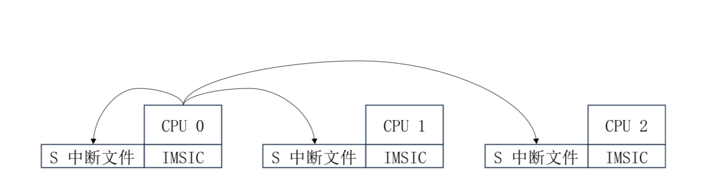

Welcome to hvisor!
Hello~
Welcome to hvisor!
hvisor is a lightweight Type-1 virtual machine monitor written in Rust, offering efficient resource management and low-overhead virtualization performance.
Features
- Cross-platform support: Supports multiple architectures including AARCH64, RISC-V, and LoongArch.
- Lightweight: Focuses on core virtualization features, avoiding unnecessary complexity found in traditional virtualization solutions, suitable for resource-constrained environments.
- Efficient: Runs directly on hardware without going through an OS layer, providing near-native performance.
- Security: Rust is known for its memory safety and concurrent programming model, helping to reduce common system-level programming errors such as memory leaks and data races.
- Fast startup: Designed to be simple with a short startup time, suitable for scenarios that require rapid deployment of virtualization.
Main Functions
- Virtual Machine Management: Provides basic management functions for creating, starting, stopping, and deleting virtual machines.
- Resource Allocation and Isolation: Supports efficient allocation and management of CPU, memory, and I/O devices, using virtualization technology to ensure isolation between different virtual machines, enhancing system security and stability.
Use Cases
- Edge Computing: Suitable for running on edge devices, providing virtualization support for IoT and edge computing scenarios.
- Development and Testing: Developers can quickly create and destroy virtual machine environments for software development and testing.
- Security Research: Provides an isolated environment for security research and malware analysis.
hvisor currently supported hardware platforms
- QEMU
hvisor upcoming hardware platforms
- OKMX8MP-C
Running hvisor on QEMU
1. Install Cross Compiler aarch64-none-linux-gnu-10.3
URL: https://developer.arm.com/downloads/-/gnu-a
Tool selection: AArch64 GNU/Linux target (aarch64-none-linux-gnu)
wget https://armkeil.blob.core.windows.net/developer/Files/downloads/gnu-a/10.3-2021.07/binrel/gcc-arm-10.3-2021.07-x86_64-aarch64-none-linux-gnu.tar.xz
tar xvf gcc-arm-10.3-2021.07-x86_64-aarch64-none-linux-gnu.tar.xz
ls gcc-arm-10.3-2021.07-x86_64-aarch64-none-linux-gnu/bin/
After installation, remember the path, for example, at: /home/tools/gcc-arm-10.3-2021.07-x86_64-aarch64-none-linux-gnu/bin/aarch64-none-linux-gnu-, this path will be used later.
2. Compile and Install QEMU 7.2.12
# Install required dependencies for compilation
sudo apt install autoconf automake autotools-dev curl libmpc-dev libmpfr-dev libgmp-dev \
gawk build-essential bison flex texinfo gperf libtool patchutils bc \
zlib1g-dev libexpat-dev pkg-config libglib2.0-dev libpixman-1-dev libsdl2-dev \
git tmux python3 python3-pip ninja-build
# Download source code
wget https://download.qemu.org/qemu-7.2.12.tar.xz
# Unzip
tar xvJf qemu-7.2.12.tar.xz
cd qemu-7.2.12
# Generate configuration files
./configure --enable-kvm --enable-slirp --enable-debug --target-list=aarch64-softmmu,x86_64-softmmu
# Compile
make -j$(nproc)
Then edit the ~/.bashrc file, add a few lines at the end of the file:
# Please note, the parent directory of qemu-7.2.12 can be flexibly adjusted according to your actual installation location
export PATH=$PATH:/path/to/qemu-7.2.12/build
Afterward, you can update the system path in the current terminal by source ~/.bashrc, or directly restart a new terminal. At this point, you can check the qemu version:
qemu-system-aarch64 --version #Check version
Note, the above dependency packages may not be complete, for example:
- If you encounter
ERROR: pkg-config binary 'pkg-config' not found, you can install thepkg-configpackage;- If you encounter
ERROR: glib-2.48 gthread-2.0 is required to compile QEMU, you can install thelibglib2.0-devpackage;- If you encounter
ERROR: pixman >= 0.21.8 not present, you can install thelibpixman-1-devpackage.
If you encounter an error ERROR: Dependency "slirp" not found, tried pkgconfig while generating configuration files:
Download https://gitlab.freedesktop.org/slirp/libslirp package, and install according to the readme.
3. Compile Linux Kernel 5.4
Before compiling the root linux image, change the CONFIG_IPV6 and CONFIG_BRIDGE config in the .config file to y, to support creating bridges and tap devices in root linux. The specific operations are as follows:
git clone https://github.com/torvalds/linux -b v5.4 --depth=1
cd linux
git checkout v5.4
# Modify the CROSS_COMPILE path according to the path of the cross compiler installed in the first step
make ARCH=arm64 CROSS_COMPILE=/root/gcc-arm-10.3-2021.07-x86_64-aarch64-none-linux-gnu/bin/aarch64-none-linux-gnu- defconfig
# Add a line in .config
CONFIG_BLK_DEV_RAM=y
# Modify two CONFIG parameters in .config
CONFIG_IPV6=y
CONFIG_BRIDGE=y
# Compile, modify the CROSS_COMPILE path according to the path of the cross compiler installed in the first step
make ARCH=arm64 CROSS_COMPILE=/root/gcc-arm-10.3-2021.07-x86_64-aarch64-none-linux-gnu/bin/aarch64-none-linux-gnu- Image -j$(nproc)
If you encounter an error while compiling linux:
/usr/bin/ld: scripts/dtc/dtc-parser.tab.o:(.bss+0x20): multiple definition of `yylloc'; scripts/dtc/dtc-lexer.lex.o:(.bss+0x0): first defined hereThen modify the file
scripts/dtc/dtc-lexer.lex.cunder the linux folder, addexternbeforeYYLTYPE yylloc;. Compile again, if you encounter an error: openssl/bio.h: No such file or directory, then executesudo apt install libssl-dev
After compilation, the kernel file is located at: arch/arm64/boot/Image. Remember the entire linux folder's path, for example: home/korwylee/lgw/hypervisor/linux, we will use this path in step 7.
4. Build File System Based on Ubuntu 20.04 arm64 Base
This section can be omitted, you can directly download the ready-made disk image for use. https://blog.syswonder.org/#/2024/20240415_Virtio_devices_tutorial
We use Ubuntu 20.04 (22.04 is also possible) to build the root file system.
Download: ubuntu-base-20.04.5-base-arm64.tar.gz
Link: http://cdimage.ubuntu.com/ubuntu-base/releases/20.04/release/ubuntu-base-20.04.5-base-arm64.tar.gz
wget http://cdimage.ubuntu.com/ubuntu-base/releases/20.04/release/ubuntu-base-20.04.5-base-arm64.tar.gz
mkdir rootfs
# Create a 1G ubuntu.img, you can modify the count to change the img size
dd if=/dev/zero of=ubuntu-20.04-rootfs_ext4.img bs=1M count=1024 oflag=direct
mkfs.ext4 ubuntu-20.04-rootfs_ext4.img
# Put ubuntu.tar.gz into the ubuntu.img that has been mounted on rootfs
sudo mount -t ext4 ubuntu-20.04-rootfs_ext4.img rootfs/
sudo tar -xzf ubuntu-base-20.04.5-base-arm64.tar.gz -C rootfs/
# Let rootfs bind and get some information and hardware of the physical machine
# qemu-path is your qemu path
sudo cp qemu-path/build/qemu-system-aarch64 rootfs/usr/bin/
sudo cp /etc/resolv.conf rootfs/etc/resolv.conf
sudo mount -t proc /proc rootfs/proc
sudo mount -t sysfs /sys rootfs/sys
sudo mount -o bind /dev rootfs/dev
sudo mount -o bind /dev/pts rootfs/dev/pts
# Executing this command may report an error, please refer to the solution below
sudo chroot rootfs
sudo apt-get install git sudo vim bash-completion \
kmod net-tools iputils-ping resolvconf ntpdate
# The following content surrounded by # is optional
###################
adduser arm64
adduser arm64 sudo
echo "kernel-5_4" >/etc/hostname
echo "127.0.0.1 localhost" >/etc/hosts
echo "127.0.0.1 kernel-5_4">>/etc/hosts
dpkg-reconfigure resolvconf
dpkg-reconfigure tzdata
###################
exit
sudo umount rootfs/proc
sudo umount rootfs/sys
sudo umount rootfs/dev/pts
sudo umount rootfs/dev
sudo umount rootfs
Finally, unmount the mount to complete the root file system production.
When executing
sudo chroot ., if you encounter the errorchroot: failed to run command ‘/bin/bash’: Exec format error, you can execute the command:sudo apt-get install qemu-user-static sudo update-binfmts --enable qemu-aarch64
5. Rust Environment Configuration
Please refer to: Rust Language Bible
6. Compile and Run hvisor
First, pull the hvisor code repository locally, then switch to the dev branch, and in the hvisor/images/aarch64 folder, put the previously compiled root file system and Linux kernel image respectively in the virtdisk and kernel directories, and rename them as rootfs1.ext4 and Image respectively. And in the devicetree directory, execute make all.
Then, in the hvisor directory, execute:
make ARCH=aarch64 LOG=info FEATURES=platform_qemu run
Afterward, you will enter the uboot startup interface, under this interface execute:
bootm 0x40400000 - 0x40000000
This startup command will boot hvisor from the physical address 0x40400000, with the device tree address at 0x40000000. When hvisor starts, it will automatically start root linux (used for management) and enter the shell interface of root linux, root linux is zone0, taking on management tasks.
If missing
dtc, you can execute the command:sudo apt install device-tree-compiler
7. Use hvisor-tool to Start zone1-linux
First, complete the compilation of the latest version of hvisor-tool. For details, please refer to the README of hvisor-tool (the Chinese version is the latest version, the English README may not be updated in time). For example, if you want to compile a command line tool for arm64, and the source code of the Linux image in the Hvisor environment is located at ~/linux, you can execute
make all ARCH=arm64 LOG=LOG_WARN KDIR=~/linux
Please make sure that the Linux image in Hvisor is compiled from the Linux source directory specified in the options of compiling hvisor-tool.
After compilation, copy driver/hvisor.ko, tools/hvisor, driver/ivc.ko (if this file exists) to the directory where zone1 linux is started in the image/virtdisk/rootfs1.ext4 root file system (currently /home/arm64); then put the kernel image of zone1 (if it is the same Linux as zone0, copy a copy of image/aarch64/kernel/Image), and the device tree (image/aarch64/linux2.dtb) in the same directory (/home/arm64) of rootfs1.ext4, and rename them as Image and linux2.dtb respectively.
Finally, copy rootfs1.ext4 in place in image/aarch64/virtdisk, rename it as rootfs2.etx4.
Then, zone1-linux can be started on QEMU through root linux-zone0.
For detailed steps to start zone1-linux, refer to the README of hvisor-tool. Here is a reference (subject to hvisor-tool), where linux2.json is the configuration file for zone1-linux:
# Execute in the /home/arm64 directory:
insmod hvisor.ko
./hvisor zone start linux2.json
Install qemu
Install QEMU 7.2.12:
wget https://download.qemu.org/qemu-7.2.12.tar.xz
# Unzip
tar xvJf qemu-7.2.12.tar.xz
cd qemu-7.2.12
# Configure Riscv support
./configure --target-list=riscv64-softmmu,riscv64-linux-user
make -j$(nproc)
# Add to environment variable
export PATH=$PATH:/path/to/qemu-7.2.12/build
# Test if installation is successful
qemu-system-riscv64 --version
Install Cross Compiler
The RISC-V cross compiler needs to be obtained and compiled from riscv-gnu-toolchain.
# Install necessary tools
sudo apt-get install autoconf automake autotools-dev curl python3 python3-pip libmpc-dev libmpfr-dev libgmp-dev gawk build-essential bison flex texinfo gperf libtool patchutils bc zlib1g-dev libexpat-dev ninja-build git cmake libglib2.0-dev libslirp-dev
git clone https://github.com/riscv/riscv-gnu-toolchain
cd riscv-gnu-toolchain
git rm qemu
git submodule update --init --recursive
# The above operations will occupy more than 5GB of disk space
# If git reports a network error, you can execute:
git config --global http.postbuffer 524288000
Then start compiling the toolchain:
cd riscv-gnu-toolchain
mkdir build
cd build
../configure --prefix=/opt/riscv64
sudo make linux -j $(nproc)
# After compilation, add the toolchain to the environment variable
echo 'export PATH=/opt/riscv64/bin:$PATH' >> ~/.bashrc
source ~/.bashrc
This will get the riscv64-unknown-linux-gnu toolchain.
Compile Linux
git clone https://github.com/torvalds/linux -b v6.2 --depth=1
cd linux
git checkout v6.2
make ARCH=riscv CROSS_COMPILE=riscv64-unknown-linux-gnu- defconfig
make ARCH=riscv CROSS_COMPILE=riscv64-unknown-linux-gnu- modules -j$(nproc)
# Start compilation
make ARCH=riscv CROSS_COMPILE=riscv64-unknown-linux-gnu- Image -j$(nproc)
Create Ubuntu Root File System
wget http://cdimage.ubuntu.com/ubuntu-base/releases/20.04/release/ubuntu-base-20.04.2-base-riscv64.tar.gz
mkdir rootfs
dd if=/dev/zero of=riscv_rootfs.img bs=1M count=1024 oflag=direct
mkfs.ext4 riscv_rootfs.img
sudo mount -t ext4 riscv_rootfs.img rootfs/
sudo tar -xzf ubuntu-base-20.04.2-base-riscv64.tar.gz -C rootfs/
sudo cp /path-to-qemu/build/qemu-system-riscv64 rootfs/usr/bin/
sudo cp /etc/resolv.conf rootfs/etc/resolv.conf
sudo mount -t proc /proc rootfs/proc
sudo mount -t sysfs /sys rootfs/sys
sudo mount -o bind /dev rootfs/dev
sudo mount -o bind /dev/pts rootfs/dev/pts
sudo chroot rootfs
# After entering chroot, install necessary packages:
apt-get update
apt-get install git sudo vim bash-completion \
kmod net-tools iputils-ping resolvconf ntpdate
exit
sudo umount rootfs/proc
sudo umount rootfs/sys
sudo umount rootfs/dev/pts
sudo umount rootfs/dev
sudo umount rootfs
Run hvisor
Place the prepared root file system and Linux kernel image in the specified location under the hvisor directory, and execute make run ARCH=riscv64 in the root directory of hvisor
By default, PLIC is used, execute make run ARCH=riscv64 IRQ=aia to enable AIA specification
Possible Issues
After running Linux, the display shows /bin/sh: 0: can't access tty; job control turned off, type bash in the console.
NXP Launches Jailhouse
Date: 2024/2/25 Update Date: 2024/3/13
Authors: Yang Junyi, Chen Xingyu
Overall Approach:
- Boot the first Linux using an SD card, it is recommended to use Ubuntu's rootfs for this Linux and ensure it is network-enabled for easy package installation.
- Boot the root Linux and compile the Linux kernel and Jailhouse.
- Restart, modify the root dtb, and boot root Linux.
- Jailhouse boots nonroot Linux, which is the Linux on the eMMC (original manufacturer's Linux), specifying rootfs as eMMC.
1. Creating an Ubuntu SD Card Image
wget https://cdimage.ubuntu.com/ubuntu-base/releases/18.04/release/ubuntu-base-18.04.5-base-arm64.tar.gz
tar zxvf ubuntu-base-18.04.5-base-arm64.tar.gz
cd ubuntu-base-18.04.5-base-arm64
# chroot in x86
sudo apt-get install qemu
sudo cp /usr/bin/qemu-aarch64-static usr/bin/
sudo mount /sys ./sys -o bind
sudo mount /proc ./proc -o bind
sudo mount /dev ./dev -o bind
sudo mv etc/resolv.conf etc/resolv.conf.saved
sudo cp /etc/resolv.conf etc
sudo LC_ALL=C chroot . /bin/bash
# chroot in arm
sudo arch-chroot .
sudo apt-get update
# Install necessary packages, such as vim, build-essential, python3, python3-dev, gcc, g++, git, make, kmod.
sudo apt-get install <PKG_NAME>
exit
# If using arch-chroot, no need to manually umount
sudo umount ./sys
sudo umount ./proc
sudo umount ./dev
mv etc/resolv.conf.saved etc/resolv.conf
## Additionally, copy Linux and jailhouse to the SD card, change to local path here.
sudo cp -r LINUX_DEMO ubuntu-base-18.04.5-base-arm64/home # Source path see Linux kernel compilation section
sudo cp -r Jailhouse_DEMO ubuntu-base-18.04.5-base-arm64/home
# Then copy the ubuntu-base-18.04.5-base-arm64 directory to the SD card as rootfs.
# It is recommended to complete the "Compilation" section before copying, or you can compile after entering the system
sudo fdisk -l # Determine the SD card device name
sudo mount /dev/sdb1 /mnt
sudo cp -r ubuntu-base-18.04.5-base-arm64 /mnt
2. Compile NXP Linux Kernel
The source code can be obtained from the manufacturer's materials (source location: /OKMX8MP-C_Linux5.4.70+Qt5.15.0_User Data_R5 (update date: 20231012)/Linux/Source/OK8MP-linux-sdk/OK8MP-linux-kernel)
Adding root device tree
Device tree storage location is arch/arm64/boot/dts/freescale, add new device tree OK8MP-C-root.dts, mainly modify to disable usdhc3 (eMMC) and uart4, and share pins between usdhc3 and usdhc2 to facilitate booting non-root-linux
Content:
// SPDX-License-Identifier: (GPL-2.0+ OR MIT)
/*
* Copyright 2019 NXP
*/
/dts-v1/;
#include "OK8MP-C.dts"
/ {
interrupt-parent = <&gic>;
resmem: reserved-memory {
#address-cells = <2>;
#size-cells = <2>;
ranges;
};
};
&cpu_pd_wait {
/delete-property/ compatible;
};
&clk {
init-on-array = <IMX8MP_CLK_USDHC3_ROOT
IMX8MP_CLK_NAND_USDHC_BUS
IMX8MP_CLK_HSIO_ROOT
IMX8MP_CLK_UART4_ROOT
IMX8MP_CLK_OCOTP_ROOT>;
};
&{/busfreq} {
status = "disabled";
};
&{/reserved-memory} { // Reserved jailhouse memory area
jh_reserved: jh@fdc00000 {
no-map;
reg = <0 0xfdc00000 0x0 0x400000>;
};
loader_reserved: loader@fdb00000 {
no-map;
reg = <0 0xfdb00000 0x0 0x00100000>;
};
ivshmem_reserved: ivshmem@fda00000 {
no-map;
reg = <0 0xfda00000 0x0 0x00100000>;
};
ivshmem2_reserved: ivshmem2@fd900000 {
no-map;
reg = <0 0xfd900000 0x0 0x00100000>;
};
pci_reserved: pci@fd700000 {
no-map;
reg = <0 0xfd700000 0x0 0x00200000>;
};
inmate_reserved: inmate@60000000 {
no-map;
reg = <0 0x60000000 0x0 0x10000000>;
};
};
&iomuxc {
pinctrl_uart4: uart4grp {
fsl,pins = <
MX8MP_IOMUXC_UART4_RXD__UART4_DCE_RX 0x49
MX8MP_IOMUXC_UART4_TXD__UART4_DCE_TX 0x49
>;
};
};
&usdhc3 { // eMMC: mmc2, since this eMMC is nonroot, root should not occupy it, so disable it
status = "disabled";
};
&uart4 { // This is also disabled, used for nonroot boot.
/delete-property/ dmas;
/delete-property/ dma-names;
pinctrl-names = "default";
pinctrl-0 = <&pinctrl_uart4>;
status = "disabled";
};
&uart2 { // uart1=ttymxc0 uart4=ttymxc3 default for ttymxc1.
/* uart4 is used by the 2nd OS, so configure pin and clk */
pinctrl-0 = <&pinctrl_uart2>, <&pinctrl_uart4>;
assigned-clocks = <&clk IMX8MP_CLK_UART4>;
assigned-clock-parents = <&clk IMX8MP_CLK_24M>;
};
&usdhc2 {
pinctrl-0 = <&pinctrl_usdhc3>, <&pinctrl_usdhc2>, <&pinctrl_usdhc2_gpio>;
pinctrl-1 = <&pinctrl_usdhc3>, <&pinctrl_usdhc2_100mhz>, <&pinctrl_usdhc2_gpio>;
pinctrl-2 = <&pinctrl_usdhc3>, <&pinctrl_usdhc2_200mhz>, <&pinctrl_usdhc2_gpio>;
};
Kernel Compilation
# First, refer to the previous chroot and enter the source directory
make OK8MP-C_defconfig # Configure default config
make -j$(nproc) ARCH=arm64 # Compilation takes about 15 minutes
If the gcc version is high, you may encounter yylloc issues, which can be resolved by lowering the version or by adding extern in front of yylloc in scripts/dtc under dtc-lexer.lex.c_shipped
If there are definition conflicts between jailhouse and the kernel, prioritize the kernel and modify jailhouse accordingly
Compile jailhouse
Use jailhouse version v0.12 and manually add dts and configuration files
git checkout v0.12
.c file addition location configs/arm64
.dts file addition location configs/arm64/dts
imx8mp.c
/*
* i.MX8MM Target
*
* Copyright 2018 NXP
*
* Authors:
* Peng Fan <peng.fan@nxp.com>
*
* This work is licensed under the terms of the GNU GPL, version 2. See
* the COPYING file in the top-level directory.
*
* Reservation via device tree: reg = <0x0 0xffaf0000 0x0 0x510000>
*/
#include <jailhouse/types.h>
#include <jailhouse/cell-config.h>
struct {
struct jailhouse_system header;
__u64 cpus[1];
struct jailhouse_memory mem_regions[15];
struct jailhouse_irqchip irqchips[3];
struct jailhouse_pci_device pci_devices[2];
} __attribute__((packed)) config = {
.header = {
.signature = JAILHOUSE_SYSTEM_SIGNATURE,
.revision = JAILHOUSE_CONFIG_REVISION,
.flags = JAILHOUSE_SYS_VIRTUAL_DEBUG_CONSOLE,
.hypervisor_memory = {
.phys_start = 0xfdc00000,
.size = 0x00400000,
},
.debug_console = {
.address = 0x30890000,
.size = 0x1000,
.flags = JAILHOUSE_CON_TYPE_IMX |
JAILHOUSE_CON_ACCESS_MMIO |
JAILHOUSE_CON_REGDIST_4,
.type = JAILHOUSE_CON_TYPE_IMX,
},
.platform_info = {
.pci_mmconfig_base = 0xfd700000,
.pci_mmconfig_end_bus = 0,
.pci_is_virtual = 1,
.pci_domain = 0,
.arm = {
.gic_version = 3,
.gicd_base = 0x38800000,
.gicr_base = 0x38880000,
.maintenance_irq = 25,
},
},
.root_cell = {
.name = "imx8mp",
.num_pci_devices = ARRAY_SIZE(config.pci_devices),
.cpu_set_size = sizeof(config.cpus),
.num_memory_regions = ARRAY_SIZE(config.mem_regions),
.num_irqchips = ARRAY_SIZE(config.irqchips),
/* gpt5/4/3/2 not used by root cell */
.vpci_irq_base = 51, /* Not include 32 base */
},
},
.cpus = {
0xf,
},
.mem_regions = {
/* IVHSMEM shared memory region for 00:00.0 (demo )*/ {
.phys_start = 0xfd900000,
.virt_start = 0xfd900000,
.size = 0x1000,
.flags = JAILHOUSE_MEM_READ,
},
{
.phys_start = 0xfd901000,
.virt_start = 0xfd901000,
.size = 0x9000,
.flags = JAILHOUSE_MEM_READ | JAILHOUSE_MEM_WRITE ,
},
{
.phys_start = 0xfd90a000,
.virt_start = 0xfd90a000,
.size = 0x2000,
.flags = JAILHOUSE_MEM_READ | JAILHOUSE_MEM_WRITE ,
},
{
.phys_start = 0xfd90c000,
.virt_start = 0xfd90c000,
.size = 0x2000,
.flags = JAILHOUSE_MEM_READ,
},
{
.phys_start = 0xfd90e000,
.virt_start = 0xfd90e000,
.size = 0x2000,
.flags = JAILHOUSE_MEM_READ,
},
/* IVSHMEM shared memory regions for 00:01.0 (networking) */
JAILHOUSE_SHMEM_NET_REGIONS(0xfda00000, 0),
/* IO */ {
.phys_start = 0x00000000,
.virt_start = 0x00000000,
.size = 0x40000000,
.flags = JAILHOUSE_MEM_READ | JAILHOUSE_MEM_WRITE |
JAILHOUSE_MEM_IO,
},
/* RAM 00*/ {
.phys_start = 0x40000000,
.virt_start = 0x40000000,
.size = 0x80000000,
.flags = JAILHOUSE_MEM_READ | JAILHOUSE_MEM_WRITE |
JAILHOUSE_MEM_EXECUTE,
},
/* Inmate memory */{
.phys_start = 0x60000000,
.virt_start = 0x60000000,
.size = 0x10000000,
.flags = JAILHOUSE_MEM_READ | JAILHOUSE_MEM_WRITE |
JAILHOUSE_MEM_EXECUTE | JAILHOUSE_MEM_DMA,
},
/* Loader */{
.phys_start = 0xfdb00000,
.virt_start = 0xfdb00000,
.size = 0x100000,
.flags = JAILHOUSE_MEM_READ | JAILHOUSE_MEM_WRITE |
JAILHOUSE_MEM_EXECUTE,
},
/* OP-TEE reserved memory?? */{
.phys_start = 0xfe000000,
.virt_start = 0xfe000000,
.size = 0x2000000,
.flags = JAILHOUSE_MEM_READ | JAILHOUSE_MEM_WRITE,
},
/* RAM04 */{
.phys_start = 0x100000000,
.virt_start = 0x100000000,
.size = 0xC0000000,
.flags = JAILHOUSE_MEM_READ | JAILHOUSE_MEM_WRITE,
},
},
.irqchips = {
/* GIC */ {
.address = 0x38800000,
.pin_base = 32,
.pin_bitmap = {
0xffffffff, 0xffffffff, 0xffffffff, 0xffffffff,
},
},
/* GIC */ {
.address = 0x38800000,
.pin_base = 160,
.pin_bitmap = {
0xffffffff, 0xffffffff, 0xffffffff, 0xffffffff,
},
},
/* GIC */ {
.address = 0x38800000,
.pin_base = 288,
.pin_bitmap = {
0xffffffff, 0xffffffff, 0xffffffff, 0xffffffff,
},
},
},
.pci_devices = {
{ /* IVSHMEM 0000:00:00.0 (demo) */
.type = JAILHOUSE_PCI_TYPE_IVSHMEM,
.domain = 0,
.bdf = 0 << 3,
.bar_mask = JAILHOUSE_IVSHMEM_BAR_MASK_INTX,
.shmem_regions_start = 0,
.shmem_dev_id = 0,
.shmem_peers = 3,
.shmem_protocol = JAILHOUSE_SHMEM_PROTO_UNDEFINED,
},
{ /* IVSHMEM 0000:00:01.0 (networking) */
.type = JAILHOUSE_PCI_TYPE_IVSHMEM,
.domain = 0,
.bdf = 1 << 3,
.bar_mask = JAILHOUSE_IVSHMEM_BAR_MASK_INTX,
.shmem_regions_start = 5,
.shmem_dev_id = 0,
.shmem_peers = 2,
.shmem_protocol = JAILHOUSE_SHMEM_PROTO_VETH,
},
},
};
imx8mp-linux-demo.c
/*
* iMX8MM target - linux-demo
*
* Copyright 2019 NXP
*
* Authors:
* Peng Fan <peng.fan@nxp.com>
*
* This work is licensed under the terms of the GNU GPL, version 2. See
* the COPYING file in the top-level directory.
*/
/*
* Boot 2nd Linux cmdline:
* export PATH=$PATH:/usr/share/jailhouse/tools/
* jailhouse cell linux imx8mp-linux-demo.cell Image -d imx8mp-evk-inmate.dtb -c "clk_ignore_unused console=ttymxc3,115200 earlycon=ec_imx6q,0x30890000,115200 root=/dev/mmcblk2p2 rootwait rw"
*/
#include <jailhouse/types.h>
#include <jailhouse/cell-config.h>
struct {
struct jailhouse_cell_desc cell;
__u64 cpus[1];
struct jailhouse_memory mem_regions[15];
struct jailhouse_irqchip irqchips[2];
struct jailhouse_pci_device pci_devices[2];
} __attribute__((packed)) config = {
.cell = {
.signature = JAILHOUSE_CELL_DESC_SIGNATURE,
.revision = JAILHOUSE_CONFIG_REVISION,
.name = "linux-inmate-demo",
.flags = JAILHOUSE_CELL_PASSIVE_COMMREG,
.cpu_set_size = sizeof(config.cpus),
.num_memory_regions = ARRAY_SIZE(config.mem_regions),
.num_irqchips = ARRAY_SIZE(config.irqchips),
.num_pci_devices = ARRAY_SIZE(config.pci_devices),
.vpci_irq_base = 154, /* Not include 32 base */
},
.cpus = {
0xc,
},
.mem_regions = {
/* IVHSMEM shared memory region for 00:00.0 (demo )*/ {
.phys_start = 0xfd900000,
.virt_start = 0xfd900000,
.size = 0x1000,
.flags = JAILHOUSE_MEM_READ | JAILHOUSE_MEM_ROOTSHARED,
},
{
.phys_start = 0xfd901000,
.virt_start = 0xfd901000,
.size = 0x9000,
.flags = JAILHOUSE_MEM_READ | JAILHOUSE_MEM_WRITE |
JAILHOUSE_MEM_ROOTSHARED,
},
{
.phys_start = 0xfd90a000,
.virt_start = 0xfd90a000,
.size = 0x2000,
.flags = JAILHOUSE_MEM_READ | JAILHOUSE_MEM_ROOTSHARED,
},
{
.phys_start = 0xfd90c000,
.virt_start = 0xfd90c000,
.size = 0x2000,
.flags = JAILHOUSE_MEM_READ | JAILHOUSE_MEM_ROOTSHARED,
},
{
.phys_start = 0xfd90e000,
.virt_start = 0xfd90e000,
.size = 0x2000,
.flags = JAILHOUSE_MEM_READ | JAILHOUSE_MEM_WRITE |
JAILHOUSE_MEM_ROOTSHARED,
},
/* IVSHMEM shared memory regions for 00:01.0 (networking) */
JAILHOUSE_SHFPGA zcu102
Author: 杨竣轶 (Jerry) github.com/comet959
# Before, Install vivado 2022.2 software
# Ubuntu 20.04 can work fine
sudo apt update
git clone https://github.com/U-interrupt/uintr-rocket-chip.git
cd uintr-rocket-chip
git submodule update --init --recursive
export RISCV=/opt/riscv64
git checkout 98e9e41
vim digilent-vivado-script/config.ini # Env Config
make checkout
make clean
make build
# Use vivado to open the vivado project, then change the top file, run synthesis, run implementation, generate bitstream.
# Connect the zcu102 - Jtag and Uart on your PC.
# Use dd command to flash the image include boot and rootfs part.
# Change the boot button mode to (On Off Off Off)
# Boot the power.
sudo screen /dev/ttyUSB0 115200 # Aarch64 Core Uart
sudo screen /dev/ttyUSB2 115200 # Riscv Core Uart
# On /dev/ttyUSB0
cd uintr-rocket-chip
./load-and-reset.sh
# Focus on ttyUSB2, then you will see the Riscv Linux Boot Msg.
Enable H extension in RocketChip
vim path/to/repo/common/src/main/scala/Configs.scala
// change
class UintrConfig extends Config(
new WithNBigCores(4) ++
new WithNExtTopInterrupts(6) ++
new WithTimebase((BigInt(10000000))) ++ // 10 MHz
new WithDTS("freechips.rocketchip-unknown", Nil) ++
new WithUIPI ++
new WithCustomBootROM(0x10000, "../common/boot/bootrom/bootrom.img") ++
new WithDefaultMemPort ++
new WithDefaultMMIOPort ++
new WithDefaultSlavePort ++
new WithoutTLMonitors ++
new WithCoherentBusTopology ++
new BaseSubsystemConfig
)
// to
class UintrConfig extends Config(
new WithHypervisor ++
new WithNBigCores(4) ++
new WithNExtTopInterrupts(6) ++
new WithTimebase((BigInt(10000000))) ++ // 10 MHz
new WithDTS("freechips.rocketchip-unknown", Nil) ++
new WithUIPI ++
new WithCustomBootROM(0x10000, "../common/boot/bootrom/bootrom.img") ++
new WithDefaultMemPort ++
new WithDefaultMMIOPort ++
new WithDefaultSlavePort ++
new WithoutTLMonitors ++
new WithCoherentBusTopology ++
new BaseSubsystemConfig
)
Starting hvisor on Loongson 3A5000 motherboard (7A2000)
Han Yulu enkerewpo@hotmail.com
Updated: 2024.12.4
Step 1: Obtain hvisor source code and compile
Clone the code locally:
git clone -b dev-loongarch https://github.com/syswonder/hvisor # dev-loongarch branch
make ARCH=loongarch64
After compiling, you can find the stripped hvisor.bin in the target directory (the file path will be displayed in the last line of the compilation output).
Obtain vmlinux.bin image
Please download the latest released hvisor default Loongson Linux image from https://github.com/enkerewpo/linux-hvisor-loongarch64/releases (including root linux kernel + root linux dtb + root linux rootfs, where root linux rootfs includes non-root linux + nonroot linux dtb + nonroot linux rootfs). If you need to compile the Linux kernel and rootfs yourself, refer to the arch/loongarch directory in the repository for hvisor-related device trees and the buildroot environment I ported for 3A5000 (https://github.com/enkerewpo/buildroot-loongarch64). If you need to manually compile hvisor-tool, please refer to https://github.com/enkerewpo/hvisor-tool, for the compilation order and script invocation process of all environments, refer to the code within the world target in the Makefile.1 file (https://github.com/enkerewpo/hvisor_uefi_packer/blob/main/Makefile.1), and compile everything by running the ./make_world script. If you need to manually compile these, you need to modify the corresponding code path variables in Makefile.1, including:
HVISOR_LA64_LINUX_DIR = ../hvisor-la64-linux
BUILDROOT_DIR = ../buildroot-loongarch64
HVISOR_TOOL_DIR = ../hvisor-tool
Then run ./make_world, please note that the first time compiling Linux and buildroot may take quite a long time (possibly up to several tens of minutes, depending on your machine performance).
Obtain hvisor UEFI Image Packer
Since the 3A5000 and subsequent 3 series CPUs' motherboards all use UEFI boot, hvisor can only be started through the efi image method, clone the repository https://github.com/enkerewpo/hvisor_uefi_packer locally:
make menuconfig # Configure for your local loongarch64 gcc toolchain prefix, hvisor.bin path, vmlinux.bin path
# Modify make_image in HVISOR_SRC_DIR=../hvisor to your actual saved hvisor source code path, then run the script
./make_image
# Get BOOTLOONGARCH64.EFI file
The obtained BOOTLOONGARCH64.EFI must be placed in the /EFI/BOOT/BOOTLOONGARCH64.EFI position of the first FAT32 partition of the USB drive. Then insert the USB drive to boot into hvisor and automatically start root linux.
Since the metadata related to root linux (loading address, memory area, etc.) is hard-coded in the hvisor source code (src/platform/ls3a5000_loongarch64.rs), if you are manually compiling the Linux kernel, you need to modify the configuration here and recompile hvisor.
Board boot
Power on the motherboard, press F12 to enter the UEFI Boot Menu, select the inserted USB drive and press Enter, hvisor will automatically start and enter the root linux bash environment.
Start nonroot
If you are using the related images provided in the release, after starting, enter in the root linux bash:
./daemon.sh
./linux2_virtio.sh
Afterward, nonroot will automatically start (some related configuration files are located in the root linux /tool directory, including the nonroot zone configuration json and virtio configuration json files provided to hvisor-tool), then a screen process connected to nonroot linux's virtio-console will automatically open, and you will see a bash printed with the nonroot label appear, you can use the CTRL+A D shortcut key to detach during screen (please remember the displayed screen session name), at this point you will return to root linux, if you want to return to nonroot linux, run
screen -r {the full name of the session just now or just enter the first few digits}
Afterward, you will return to the nonroot linux bash.
This catalog is mainly related to ZCU102, and the introduction is as follows:
- How to use Qemu to simulate Xilinx ZynqMP ZCU102
- How to boot hvisor root linux and nonroot linux on Qemu ZCU102 and ZCU102 physical development board.
Qemu ZCU102 hvisor Boot
Install Petalinux
- Install Petalinux 2024.1 Please note that this article uses 2024.1 as an example, which does not mean that other versions are not possible, but other versions have not been verified, and it has been found that Petalinux has a strong dependency on the operating system. Please install the version of Petalinux suitable for your operating system.
- Place the downloaded
petalinux.runfile in the directory where you want to install it, add execution permissions to it, and then directly run the installer with./petalinux.run. - The installer will automatically detect the required environment, and if it does not meet the requirements, it will prompt for the missing environment, which can be installed one by one with
apt install. - After installation, before using Petalinux each time, you need to enter the installation directory and manually
source settings.shto add environment variables. If it's too troublesome, you can add this command to~/.bashrc.
Install ZCU102 BSP
- Download the BSP corresponding to the Petalinux version, in the example it is ZCU102 BSP 2024.1
- Activate the Petalinux environment, i.e., in the Petalinux installation directory, run
source settings.sh. - Create a Petalinux Project based on the BSP:
petalinux-create -t project -s xilinx-zcu102-v2024.1-05230256.bsp - This will create a
xilinx-zcu102-2024.1folder, which contains the parameters required for QEMU to simulate ZCU102 (device tree), as well as precompiled Linux images, device trees, Uboot, etc., that can be directly loaded onto the board.
Compile Hvisor
Refer to "Running Hvisor on Qemu" for setting up the environment required to compile Hvisor, then in the hvisor directory, execute:
make ARCH=aarch64 LOG=info FEATURES=platform_zcu102,gicv2 cp
to compile. The directory /target/aarch64-unknown-none (may vary)/debug/hvisor contains the required hvisor image.
Prepare Device Tree
Use Existing Device Tree
In the image/devicetree directory of Hvisor, there is zcu102-root-aarch64.dts, which is a device tree file tested for booting RootLinux, compile it as follows:
dtc -I dts -O dtb -o zcu102-root-aarch64.dtb zcu102-root-aarch64.dts
If the dtc command is invalid, install device-tree-compiler.
sudo apt-get install device-tree-compiler
Prepare Device Tree Yourself
If you have custom requirements for the device, it is recommended to prepare the device tree yourself. You can decompile the pre-built/linux/images/system.dtb in the ZCU102 BSP to get a complete device tree, based on zcu102-root-aarch64.dts for modifications.
Prepare Image
Use Existing Image
It is recommended to use the pre-built/linux/images/Image from the ZCU102 BSP as the Linux kernel to boot on ZCU102, as its driver configuration is complete.
Compile Yourself
After testing, the support for ZYNQMP in the Linux source code before 5.15 is not comprehensive, it is not recommended to use versions before this for compilation. For later versions, you can compile directly according to the general compilation process, as the basic support for ZYNQMP in the source code is enabled by default. Specific compilation operations are as follows:
- Visit the linux-xlnx official website to download the Linux source code, it is best to download
zynqmp-soc-for-v6.3. tar -xvf zynqmp-soc-for-v6.3to extract the source code- Enter the extracted directory, execute the following command using the default configuration,
make ARCH=arm64 CROSS_COMPILE=aarch64-linux-gnu- defconfig - Compile:
make ARCH=arm64 CROSS_COMPILE=aarch64-linux-gnu- Image -j$(nproc) - After compilation, the directory
arch/arm64/boot/Imagecontains the required image.
Enable QEMU Simulation
- Activate the Petalinux environment, i.e., in the Petalinux installation directory, run
source settings.sh. - Enter the
xilinx-zcu102-2024.1folder, use the following command to start hvisor on the QEMU-simulated ZCU102, where the file paths need to be modified according to your actual situation.
# QEMU parameter passing
petalinux-boot --qemu --prebuilt 2 --qemu-args '-device loader,file=hvisor,addr=0x40400000,force-raw=on -device loader,
file=zcu102-root-aarch64.dtb,addr=0x40000000,force-raw=on -device loader,file=zcu102-root-aarch64.dtb,addr=0x04000000,
force-raw=on -device loader,file=/home/hangqi-ren/Image,addr=0x00200000,force-raw=on -drive if=sd,format=raw,index=1,
file=rootfs.ext4'
# Start hvisor
bootm 0x40400000 - 0x40000000
ZCU102 Board hvisor Multi-mode Boot
Booting Hvisor on ZCU102 Development Board in SD mode
Prepare SD Card
- Prepare a standard SD card, partition it into a Boot partition (FAT32) and the rest as file system partitions (EXT4). For partitioning in Windows, you can use DiskGenius, and for Linux, you can use fdisk or mkfs.
- Prepare a file system and copy its contents into any file system partition. You can refer to "NXPIMX8" for creating an Ubuntu file system or directly use the file system from the ZCU102 BSP.
- Copy
zcu102-root-aarch64.dtb,Image, andhvisorto the Boot partition. - In SD mode, it is necessary to provide ATF and Uboot from the SD card, therefore copy
pre-built/linux/images/boot.scrandBOOT.BINfrom the ZCU102 BSP to the BOOT partition.
Booting ZCU102
- Set the ZCU102 to SD mode, insert the SD card, connect the serial port, and power on.
- Press any key to interrupt the Uboot auto script execution and run the following commands to boot hvisor and root linux:
fatload mmc 0:1 0x40400000 hvisor;fatload mmc 0:1 0x40000000 zcu102-root-aarch64.dtb
fatload mmc 0:1 0x04000000 zcu102-root-aarch64.dtb;fatload mmc 0:1 0x00200000 Image;bootm 0x40400000 - 0x40000000
- If successfully booted, you will see hvisor and linux information on the serial port and eventually enter the file system.
Booting Hvisor on ZCU102 Development Board in Jtag mode
First, connect the two cables that come with the board to the JTAG and UART interfaces of the board, and the other end to the PC via USB.
Then, open a petalinux project in the command line, ensure the project has been compiled and has generated the corresponding boot files (vmlinux, BOOT.BIN, etc.), and then run from the project root directory:
petalinux-boot --jtag --prebuilt 2
Where prebuilt represents the boot level:
- Level 1: Only download the FPGA bitstream, boot FSBL and PMUFW
- Level 2: Download FPGA bitstream and boot UBOOT, and start FSBL, PMUFW, and TF-A (Trusted Firmware-A)
- Level 3: Download and boot linux, and load or boot FPGA bitstream, FSBL, PMUFW, TF-A, UBOOT
Afterwards, JTAG will download the corresponding files to the board (save to the designated memory address) and boot the corresponding bootloader. For the default UBOOT script by the official, refer to the boot.scr file in the project image directory.
Since hvisor requires a separate UBOOT command and a custom-made fitImage to boot, please refer to UBOOT FIT Image Creation, Loading, and Booting.
After creating the fitImage, replace the files in the petalinux images generation directory (Image.ub), so that JTAG loads our custom-made fitImage to the default FIT image load address configured in the petalinux project. This way, when JTAG boots, our fitImage will be loaded through the JTAG line to the corresponding address in the board memory, then extracted and booted through the uboot command line.
Another UART cable can be used to observe the output from the ZCU102 board (including FSBL, UBOOT, linux, etc.), which can be viewed through serial port tools such as screen, gtkterm, termius, or minicom.
Please Note
Since petalinux has designated some fixed memory addresses, such as the default loading addresses for the linux kernel, fitImage, and DTB (configurable during petalinux project compilation), because we need to load and boot a custom-made fitImage, a problem currently identified is if the root linux dtb's load address in its matches the petalinux compilation load address, it will cause the dtb to be overwritten by the default petalinux dtb, leading to the root linux receiving an incorrect dtb and failing to boot. Therefore, it is necessary to specify a different address from the petalinux default dtb/fitImage load address during compilation to prevent other issues.
References
[1] PetaLinux Tools Documentation: Reference Guide (UG1144).https://docs.amd.com/r/2023.1-English/ug1144-petalinux-tools-reference-guide/Booting-a-PetaLinux-Image-on-Hardware-with-JTAG [2] Trusted Firmware-A Documentation.https://trustedfirmware-a.readthedocs.io/en/latest/
ZCU102 NonRoot Boot
- Use the Linux kernel source code used during the Root boot to compile hvisor-tool, and the detailed compilation process can be found in Readme.
- Prepare the
virtio_cfg.jsonandzone1_linux.jsonneeded to boot NonRoot. You can directly use theexample/zcu102-aarch64in the hvisor-tool directory, which has been verified to ensure it can boot. - Prepare the Linux kernel Image, file system rootfs, and device tree linux1.dtb needed for NonRoot. The kernel and file system can be the same as Root, and Linux1.dtb can be configured as needed, or you can use the
images/aarch64/devicetree/zcu102-nonroot-aarch64.dtsin the hvisor directory. - Copy
hvisor.ko, hvisor, virtio_cfg, zone1_linux.json, linux1.dtb, Image, rootfs.ext4to the file system used by Root Linux. - Enter the following commands in RootLinux to start NonRoot:
# Load the kernel module
insmod hvisor.ko
# Create virtio device
nohup ./hvisor virtio start virtio_cfg.json &
# Start NonRoot based on the json configuration file
./hvisor zone start zone1_linux.json
# View the output of NonRoot and interact.
screen /dev/pts/0
For more operation details, refer to hvisor-tool Readme
UBOOT FIT Image Creation, Loading, and Booting
wheatfox (enkerewpo@hotmail.com)
This article introduces the basic knowledge related to FIT images, as well as how to create, load, and boot FIT images.
ITS Source File
ITS is the source code used by uboot to generate FIT images (FIT Image), i.e., Image Tree Source, which uses the Device Tree Source (DTS) syntax format. FIT images can be generated using the mkimage tool provided by uboot.
In the ZCU102 port of hvisor, FIT images are used to package hvisor, root linux, root dtb, and other files into one fitImage, facilitating booting on QEMU and actual hardware.
The ITS file for the ZCU102 platform is located at scripts/zcu102-aarch64-fit.its:
/dts-v1/;
/ {
description = "FIT image for HVISOR with Linux kernel, root filesystem, and DTB";
images {
root_linux {
description = "Linux kernel";
data = /incbin/("__ROOT_LINUX_IMAGE__");
type = "kernel";
arch = "arm64";
os = "linux";
...
};
...
root_dtb {
description = "Device Tree Blob";
data = /incbin/("__ROOT_LINUX_DTB__");
type = "flat_dt";
...
};
hvisor {
description = "Hypervisor";
data = /incbin/("__HVISOR_TMP_PATH__");
type = "kernel";
arch = "arm64";
...
};
};
configurations {
default = "config@1";
config@1 {
description = "default";
kernel = "hvisor";
fdt = "root_dtb";
};
};
};
Here, __ROOT_LINUX_IMAGE__, __ROOT_LINUX_DTB__, __HVISOR_TMP_PATH__ will be replaced with actual paths by the sed command in the Makefile. In the ITS source code, it mainly consists of images and configurations sections. The images section defines the files to be packaged, and the configurations section defines how to combine these files. During UBOOT booting, the files specified in the default configuration in configurations will be automatically loaded to the specified address. Multiple configurations can be set to support the loading of different image configurations at boot time.
The corresponding mkimage command in the Makefile:
.PHONY: gen-fit
gen-fit: $(hvisor_bin) dtb
@if [ ! -f scripts/zcu102-aarch64-fit.its ]; then \
echo "Error: ITS file scripts/zcu102-aarch64-fit.its not found."; \
exit 1; \
fi
$(OBJCOPY) $(hvisor_elf) --strip-all -O binary $(HVISOR_TMP_PATH)
# now we need to create the vmlinux.bin
$(GCC_OBJCOPY) $(ROOT_LINUX_IMAGE) --strip-all -O binary $(ROOT_LINUX_IMAGE_BIN)
@sed \
-e "s|__ROOT_LINUX_IMAGE__|$(ROOT_LINUX_IMAGE_BIN)|g" \
-e "s|__ROOT_LINUX_ROOTFS__|$(ROOT_LINUX_ROOTFS)|g" \
-e "s|__ROOT_LINUX_DTB__|$(ROOT_LINUX_DTB)|g" \
-e "s|__HVISOR_TMP_PATH__|$(HVISOR_TMP_PATH)|g" \
scripts/zcu102-aarch64-fit.its > temp-fit.its
@mkimage -f temp-fit.its $(TARGET_FIT_IMAGE)
@echo "Generated FIT image: $(TARGET_FIT_IMAGE)"
Booting hvisor and root linux through FIT image in petalinux qemu
Since a fitImage includes all the necessary files, for qemu, it only needs to load this file into a suitable position in memory through the loader.
Then, qemu boots and enters UBOOT, where the following command can be used to boot (please modify the specific addresses according to the actual situation, and during actual use, all lines can be copied into one line and pasted into UBOOT for booting, or saved to the environment variable bootcmd, which requires UBOOT to mount a persistent flash for environment variable storage):
setenv fit_addr 0x10000000; setenv root_linux_load 0x200000;
imxtract ${fit_addr} root_linux ${root_linux_load}; bootm ${fit_addr};
References
[1] Flat Image Tree (FIT). https://docs.u-boot.org/en/stable/usage/fit/
How to Compile
Compile using Docker
1. Install Docker
sudo snap install docker
You can also refer to the Docker Official Documentation to install Docker.
2. Build the Image
make build_docker
This step builds a Docker image, automatically compiling all required dependencies.
3. Run the Container
make docker
This step starts a container, mounts the current directory into the container, and enters the container's shell.
4. Compile
Execute the following command in the container to compile.
make all
Compile using the local environment
1. Install RustUp and Cargo
curl --proto '=https' --tlsv1.2 -sSf https://sh.rustup.rs | \
sh -s -- -y --no-modify-path --profile minimal --default-toolchain nightly
2. Install the Toolchain
The toolchain currently used by the project includes:
- Rust nightly 2023-07-12
- rustfmt
- clippy
- cargo-binutils
- rust-src
- llvm-tools-preview
- target: aarch64-unknown-none
You can check if these tools are installed yourself, or use the following commands to install them:
(1) Install toml-cli and cargo-binutils
cargo install toml-cli cargo-binutils
(2) Install the cross-compilation toolchain for the target platform
rustup target add aarch64-unknown-none
(3) Parse rust-toolchain.toml to install the Rust toolchain
RUST_VERSION=$(toml get -r rust-toolchain.toml toolchain.channel) && \
Components=$(toml get -r rust-toolchain.toml toolchain.components | jq -r 'join(" ")') && \
rustup install $RUST_VERSION && \
rustup component add --toolchain $RUST_VERSION $Components
(4) Compile
make all
How to Start Root Linux
QEMU
Install Dependencies
1. Install Dependencies
apt-get install -y jq wget build-essential \
libglib2.0-0 libfdt1 libpixman-1-0 zlib1g \
libfdt-dev libpixman-1-dev libglib2.0-dev \
zlib1g-dev ninja-build
1. Download and Extract QEMU
wget https://download.qemu.org/qemu-7.0.0.tar.xz
tar -xvf qemu-${QEMU_VERSION}.tar.xz
2. Conditionally Compile and Install QEMU
Here we only compile QEMU for emulating aarch64, if you need QEMU for other architectures, refer to QEMU Official Documentation.
cd qemu-7.0.0 && \
./configure --target-list=aarch64-softmmu,aarch64-linux-user && \
make -j$(nproc) && \
make install
3. Test if QEMU is Successfully Installed
qemu-system-aarch64 --version
Start Root Linux
1. Prepare Root File System and Kernel Image
Place the image file in hvisor/images/aarch64/kernel/, named Image.
Place the Root file system in hvisor/images/aarch64/virtdisk/, named rootfs1.ext4.
2. Start QEMU
Execute the following command in the hviosr directory:
make run
3. Enter QEMU
It will automatically load uboot, wait for uboot to finish loading, then enter bootm 0x40400000 - 0x40000000 to enter Root Linux.
How to Start NonRoot Linux
Hvisor has properly handled the startup of NonRoot, making it relatively simple, as follows:
-
Prepare the kernel image, device tree, and file system for NonRoot Linux. Place the kernel and device tree in the file system of Root Linux.
-
Specify the serial port used by this NonRoot Linux and the file system to be mounted in the device tree file for NonRoot Linux, as shown in the example below:
chosen {
bootargs = "clk_ignore_unused console=ttymxc3,115200 earlycon=ec_imx6q3,0x30a60000,115200 root=/dev/mmcblk3p2 rootwait rw";
stdout-path = "/soc@0/bus@30800000/serial@30a60000";
};
-
Compile the kernel module and command line tools for Hvisor and place them in the file system of Root Linux.
-
Start Hvisor's Root Linux and inject the kernel module that was just compiled:
insmod hvisor.ko
- Use the command line tool, here assumed to be named
hvisor, to start NonRoot Linux.
./hvisor zone start --kernel kernel image,addr=0x70000000 --dtb device tree file,addr=0x91000000 --id virtual machine number (starting from 1)
- After NonRoot Linux has started, open the specified serial port to use it.
Configuration and Management of Zones
The hvisor project, as a lightweight hypervisor, uses a Type-1 architecture that allows multiple virtual machines (zones) to run directly on top of hardware. Below is a detailed explanation of the key points for zone configuration and management:
Resource Allocation
Resources such as CPU, memory, devices, and interrupts are statically allocated to each zone, meaning that once allocated, these resources are not dynamically scheduled between zones.
Root Zone Configuration
The configuration of the root zone is hardcoded within hvisor, written in Rust, and represented as a C-style structure HvZoneConfig. This structure contains key information such as zone ID, number of CPUs, memory regions, interrupt information, physical addresses and sizes of the kernel and device tree binary (DTB).
Non-root Zones Configuration
The configuration of non-root zones is stored in the root Linux file system, usually represented in JSON format. For example:
{
"arch": "arm64",
"zone_id": 1,
"cpus": [2, 3],
"memory_regions": [
{
"type": "ram",
"physical_start": "0x50000000",
"virtual_start": "0x50000000",
"size": "0x30000000"
},
{
"type": "io",
"physical_start": "0x30a60000",
"virtual_start": "0x30a60000",
"size": "0x1000"
},
{
"type": "virtio",
"physical_start": "0xa003c00",
"virtual_start": "0xa003c00",
"size": "0x200"
}
],
"interrupts": [61, 75, 76, 78],
"kernel_filepath": "./Image",
"dtb_filepath": "./linux2.dtb",
"kernel_load_paddr": "0x50400000",
"dtb_load_paddr": "0x50000000",
"entry_point": "0x50400000"
}
- The
archfield specifies the target architecture (e.g., arm64). cpusis a list that indicates the CPU core IDs allocated to the zone.memory_regionsdescribe different types of memory regions and their physical and virtual start addresses and sizes.interruptslist the interrupt numbers allocated to the zone.kernel_filepathanddtb_filepathindicate the paths of the kernel and device tree binary files, respectively.kernel_load_paddranddtb_load_paddrare the physical memory load addresses for the kernel and device tree binary.entry_pointspecifies the kernel's entry point address.
The management tool of root Linux is responsible for reading the JSON configuration file and converting it into a C-style structure, which is then passed to hvisor to start the non-root zones.
Command Line Tool
The command line tool is a management tool affiliated with hvisor, used to create and shut down other virtual machines on the Root Linux of the virtual machine manager, and is responsible for starting the Virtio daemon to provide Virtio device emulation. The repository is located at hvisor-tool.
How to Compile
The command line tool currently supports two architectures: arm64 and riscv, and needs to be used in conjunction with a kernel module. Cross-compilation on an x86 host can be done for different architectures.
- arm64 compilation
Execute the following command in the hvisor-tool directory to obtain the command line tool hvisor and kernel module hvisorl.ko for the arm64 architecture.
make all ARCH=arm64 KDIR=xxx
Where KDIR is the Root Linux source path, used for compiling the kernel module.
- riscv compilation
Compile the command line tool and kernel module for the riscv architecture:
make all ARCH=riscv KDIR=xxx
Managing Virtual Machines
Load the Kernel Module
Before using the command line tool, you need to load the kernel module to facilitate user-space programs to interact with Hypervisor:
insmod hvisor.ko
The operation to unload the kernel module is:
rmmod hvisor.ko
Where hvisor.ko is located in the hvisor-tool/driver directory.
Start a Virtual Machine
On Root Linux, you can create a virtual machine with id 1 by the following command. This command will load the virtual machine's operating system image file Image to the real physical address xxxa, load the virtual machine's device tree file linux2.dtb to the real physical address xxxb, and start it.
./hvisor zone start --kernel Image,addr=xxxa --dtb linux2.dtb,addr=xxxb --id 1
Shut Down a Virtual Machine
Shut down the virtual machine with id 1:
./hvisor zone shutdown -id 1
Using VirtIO Devices
Currently, hvisor supports three types of Virtio devices: Virtio block, Virtio net, and Virtio Console, which are presented to virtual machines other than Root Linux via MMIO. The Virtio device source code repository is located at hvisor-tool, compiled and used together with the command-line tool. After creating a Virtio device through the command-line tool, the Virtio device becomes a daemon on Root Linux, and its log information is output to the nohup.out file.
Creating and Starting Virtio Devices
Before creating a Virtio device through the command line, execute insmod hvisor.ko to load the kernel module.
Virtio blk Device
Execute the following example command on the Root Linux console to create a Virtio blk device:
nohup ./hvisor virtio start \
--device blk,addr=0xa003c00,len=0x200,irq=78,zone_id=1,img=rootfs2.ext4 &
--device blk indicates creating a Virtio disk device for use by the virtual machine with id zone_id. The virtual machine will interact with the device through an MMIO region, starting at address addr, with length len, device interrupt number irq, and corresponding disk image path img.
Virtual machines using Virtio devices need to add information about the Virtio mmio node in the device tree.
Virtio net Device
Creating Network Topology
Before using a Virtio net device, a network topology needs to be created in Root Linux to connect the Virtio net device with the real network card through a Tap device and bridge device. Execute the following commands in Root Linux:
mount -t proc proc /proc
mount -t sysfs sysfs /sys
ip link set eth0 up
dhclient eth0
brctl addbr br0
brctl addif br0 eth0
ifconfig eth0 0
dhclient br0
ip tuntap add dev tap0 mode tap
brctl addif br0 tap0
ip link set dev tap0 up
This creates a tap0 device<-->bridge device<-->real network card network topology.
Starting Virtio net
Execute the following example command on the Root Linux console to create a Virtio net device:
nohup ./hvisor virtio start \
--device net,addr=0xa003600,len=0x200,irq=75,zone_id=1,tap=tap0 &
--device net indicates creating a Virtio network device for use by the virtual machine with id zone_id. The virtual machine will interact with the device through an MMIO region, starting at address addr, with length len, device interrupt number irq, and connected to a Tap device named tap.
Virtio Console Device
Execute the following example command on the Root Linux console to create a Virtio console device:
nohup ./hvisor virtio start \
--device console,addr=0xa003800,len=0x200,irq=76,zone_id=1 &
--device console indicates creating a Virtio console for use by the virtual machine with id zone_id. The virtual machine will interact with the device through an MMIO region, starting at address addr, with length len, device interrupt number irq.
Execute cat nohup.out | grep "char device", and you will see the output char device redirected to /dev/pts/xx. On Root Linux, execute:
screen /dev/pts/xx
to enter the virtual console and interact with the virtual machine. Press the shortcut key Ctrl +a d to return to the Root Linux terminal. Execute screen -r [session_id] to re-enter the virtual console.
Creating Multiple Virtio Devices
Execute the following command to simultaneously create Virtio blk, net, and console devices, all within one daemon process.
nohup ./hvisor virtio start \
--device blk,addr=0xa003c00,len=0x200,irq=78,zone_id=1,img=rootfs2.ext4 \
--device net,addr=0xa003600,len=0x200,irq=75,zone_id=1,tap=tap0 \
--device console,addr=0xa003800,len=0x200,irq=76,zone_id=1 &
Closing Virtio Devices
Execute the following command to close the Virtio daemon and all created devices:
pkill hvisor
hvisor Overall Architecture
-
CPU Virtualization
- Architecture Compatibility: Supports architectures such as aarch64, riscv64, and loongarch, with dedicated CPU virtualization components for each architecture.
- CPU Allocation: Uses static allocation method, pre-determining the CPU resources for each virtual machine.
-
Memory Virtualization
- Two-stage Page Table: Utilizes two-stage page table technology to optimize the memory virtualization process.
-
Interrupt Virtualization
- Interrupt Controller Virtualization: Supports virtualization of different architecture's interrupt controllers like ARM GIC and RISC-V PLIC.
- Interrupt Handling: Manages the transmission and processing flow of interrupt signals.
-
I/O Virtualization
- IOMMU Integration: Supports IOMMU to enhance the efficiency and security of DMA virtualization.
- VirtIO Standard: Follows the VirtIO specification, providing high-performance virtual devices.
- PCI Virtualization: Implements PCI virtualization, ensuring virtual machines can access physical or virtual I/O devices.
Initialization Process of hvisor
Abstract: This article introduces the relevant knowledge involved in running hvisor on qemu and the initialization process of hvisor. Starting from the launch of qemu, the entire process is tracked, and after reading this article, you will have a general understanding of the initialization process of hvisor.
Boot Process of qemu
The boot process of the computer simulated by qemu: After loading the necessary files into memory, the PC register is initialized to 0x1000, and a few instructions are executed from here before jumping to 0x80000000 to start executing the bootloader (hvsior arm part uses Uboot). After executing a few instructions, it jumps to the starting address of the kernel that uboot can recognize.
Generate the executable file of hvisor
rust-objcopy --binary-architecture=aarch64 target/aarch64-unknown-none/debug/hvisor --strip-all -O binary target/aarch64-unknown-none/debug/hvisor.bin.tmp
Convert the executable file of hvisor into a logical binary and save it as hvisor.bin.tmp.
Generate an image file recognizable by uboot
Uboot is a bootloader whose main task is to jump to the first instruction of the hvisor image and start execution, so it is necessary to ensure that the generated hvisor image is recognizable by uboot. Here, the mkimage tool is needed.
mkimage -n hvisor_img -A arm64 -O linux -C none -T kernel -a 0x40400000 -e 0x40400000 -d target/aarch64-unknown-none/debug/hvisor.bin.tmp target/aarch64-unknown-none/debug/hvisor.bin
-n hvisor_img: Specify the name of the kernel image.-A arm64: Specify the architecture as ARM64.-O linux: Specify the operating system as Linux.-C none: Do not use compression algorithms.-T kernel: Specify the type as kernel.-a 0x40400000: Specify the loading address as0x40400000.-e 0x40400000: Specify the entry address as0x40400000.-d target/aarch64-unknown-none/debug/hvisor.bin.tmp: Specify the input file as the previously generated temporary binary file.- The last parameter is the output file name, i.e., the final kernel image file
hvisor.bin.
Initialization Process
aarch64.ld Link Script
To understand how hvisor is executed, we first look at the link script aarch64.ld, which gives us a general understanding of the execution process of hvisor.
ENTRY(arch_entry)
BASE_ADDRESS = 0x40400000;
The first line sets the program entry arch_entry, which can be found in arch/aarch64/entry.rs, introduced later.
.text : {
*(.text.entry)
*(.text .text.*)
}
We make the .text segment the first segment, and place the .text.entry containing the first instruction of the entry at the beginning of the .text segment, ensuring that hvisor indeed starts execution from the 0x40400000 location agreed with qemu.
Here we also need to remember something called __core_end, which is the address of the end position of the link script, and its role can be known during the startup process.
arch_entry
With the above prerequisites, we can step into the first instruction of hvisor, which is arch_entry().
// src/arch/aarch64/entry.rs
pub unsafe extern "C" fn arch_entry() -> i32 {
unsafe {
core::arch::asm!(
"
// x0 = dtbaddr
mov x1, x0
mrs x0, mpidr_el1
and x0, x0, #0xff
ldr x2, =__core_end // x2 = &__core_end
mov x3, {per_cpu_size} // x3 = per_cpu_size
madd x4, x0, x3, x3 // x4 = cpuid * per_cpu_size + per_cpu_size
add x5, x2, x4
mov sp, x5 // sp = &__core_end + (cpuid + 1) * per_cpu_size
b {rust_main} // x0 = cpuid, x1 = dtbaddr
",
options(noreturn),
per_cpu_size=const PER_CPU_SIZE,
rust_main = sym crate::rust_main,
);
}
}
First, look at the embedded assembly part. The first instruction mov x1, x0 transfers the value in the x0 register to the x1 register, where x0 contains the address of the device tree. Qemu simulates an ARM architecture computer, which also has various devices such as mice, display screens, and various storage devices. When we want to get input from the keyboard or output to the display, we need to get input from somewhere or put the output data somewhere. In the computer, we use specific addresses to access these devices. The device tree contains the access addresses of these devices, and the hypervisor, as the general manager of all software, naturally needs to know the information of the device tree. Therefore, Uboot will put this information in x0 before entering the kernel, which is a convention.
In mrs x0, mpidr_el1, mrs is an instruction to access system-level registers, which means to send the contents of the system register mpidr_el1 to x0. mpidr_el1 contains information about which CPU we are currently dealing with (the computer supports multi-core CPUs), and there will be a lot of cooperation work with the CPU later, so we need to know which CPU is currently in use. This register contains a lot of information about the CPU, and we currently need to use the lower 8 bits to extract the corresponding CPU id, which is what the instruction and x0, x0, #0xff is doing.
ldr x2, = __core_end, at the end of the link script, we set a symbol __core_end as the end address of the entire hvisor program space, and put this address into x2.
mov x3, {per_cpu_size} puts the size of each CPU's stack into x3. This {xxx} is to replace the value of xxx defined externally into the assembly code. You can see that the parameter below per_cpu_size=const PER_CPU_SIZE has changed the name of an external variable as a parameter. Another parameter with sym indicates that a symbol follows, which is defined elsewhere.
per_cpu_size in this size space, related registers can be saved and restored, including the CPU's stack space.
madd x4, x0, x3, x3 is a multiply-add instruction, cpu_id * per_cpu_size + per_cpu_size, and the result is put into x4. At this point, x4 contains the total space required by the current number of CPUs. (Starting from 0, so add per_cpu_size one more time).
add x5, x2, x4 means to add the end address of hvisor and the total space required by the CPU to x5.
mov sp, x5 finds the top of the current CPU's stack.
b {rust_main} represents jumping to rust_main to start execution, which also indicates that this section of assembly code will not return, corresponding to option(noreturn).
Enter rust_main()
fn rust_main(cpuid: usize, host_dtb: usize)
Entering rust_main requires two parameters, which are passed through x0 and x1. Remember that in the previous entry, our x0 stored the cpu_id and x1 stored the device tree information.
install_trap_vector()
When the processor encounters an exception or interrupt, it needs to jump to the corresponding location for processing. Here, the corresponding jump addresses are set (which can be considered as setting a table) for handling exceptions at the Hypervisor level. Each privilege level has its own corresponding exception vector table, except for EL0, the application privilege level, which must jump to other privilege levels to handle exceptions. The VBAR_ELn register is used to store the base address of the exception vector table for the ELn privilege level.
extern "C" {
fn _hyp_trap_vector();
}
pub fn install_trap_vector() {
// Set the trap vector.
VBAR_EL2.set(_hyp_trap_vector as _)
}
VBAR_EL2.set() sets the address of _hyp_trap_vector() as the base address of the exception vector table for the EL2 privilege level.
_hyp_trap_vector() This assembly code constructs the exception vector table.
Simple Introduction to the Exception Vector Table Format
Based on the level of the exception and whether the level of handling the exception remains the same, it is divided into two categories. If the level does not change, it is divided into two groups based on whether the current level's SP is used. If the exception level changes, it is divided into two groups based on whether the execution mode is 64-bit/32-bit. Thus, the exception vector table is divided into 4 groups. In each group, each table entry represents an entry point for handling a specific type of exception.
Main CPU
static MASTER_CPU: AtomicI32 = AtomicI32::new(-1);
let mut is_primary = false;
if MASTER_CPU.load(Ordering::Acquire) == -1 {
MASTER_CPU.store(cpuid as i32, Ordering::Release);
is_primary = true;
println!("Hello, HVISOR!");
#[cfg(target_arch = "riscv64")]
clear_bss();
}
static MASTER_CPU: AtomicI32 In this, AtomicI32 indicates that this is an atomic type, meaning its operations are either successful or fail without any intermediate state, ensuring safe access in a multi-threaded environment. In short, it is a very safe i32 type.
MASSTER_CPU.load() is a method for performing read operations. The parameter Ordering::Acquire indicates that if there are some write operations before I read, I need to wait for these write operations to be completed in order. In short, this parameter ensures that the data is correctly changed before being read.
If it reads -1, the same as when it was defined, it indicates that the main CPU has not been set, so set cpu_id as the main CPU. Similarly, the role of Ordering::Release is certainly to ensure that all other modifications are completed before the change.
Common Data Structure for CPUs: PerCpu
hvisor supports different architectures, and a reasonable system design should allow different architectures to use a unified interface for easy description of each part's work. PerCpu is such a general CPU description.
pub struct PerCpu {
pub id: usize,
pub cpu_on_entry: usize,
pub arch_cpu: ArchCpu,
pub zone: Option<Arc<RwLock<Zone>>>,
pub ctrl_lock: Mutex<()>,
pub boot_cpu: bool,
// percpu stack
}
For each field of PerCpu:
id: CPU sequence numbercpu_on_entry: The address of the first instruction when the CPU enters EL1, also known as the guest. Only when this CPU is the boot CPU will it be set to a valid value. Initially, we set it to an inaccessible address.arch_cpu: CPU description related to the architecture. The behavior is initiated byPerCpu, and the specific executor isarch_cpu.cpu_idpsci_on: Whether the cpu is started
zone: zone actually represents a guestOS. For the same guestOS, multiple CPUs may serve it.ctrl_lock: Set for concurrent safety.boot_cpu: For a guestOS, it distinguishes the main/secondary cores serving it.boot_cpuindicates whether the current CPU is the main core for a guest.
Main Core Wakes Up Other Cores
if is_primary {
wakeup_secondary_cpus(cpu.id, host_dtb);
}
fn wakeup_secondary_cpus(this_id: usize, host_dtb: usize) {
for cpu_id in 0..MAX_CPU_NUM {
if cpu_id == this_id {
continue;
}
cpu_start(cpu_id, arch_entry as _, host_dtb);
}
}
pub fn cpu_start(cpuid: usize, start_addr: usize, opaque: usize) {
psci::cpu_on(cpuid as u64 | 0x80000000, start_addr as _, opaque as _).unwrap_or_else(|err| {
if let psci::error::Error::AlreadyOn = err {
} else {
panic!("can't wake up cpu {}", cpuid);
}
});
}
If the current CPU is the main CPU, it will wake up other secondary cores, and the secondary cores execute cpu_start. In cpu_start, cpu_on actually calls the SMC instruction in call64, falling into EL3 to perform the action of waking up the CPU.
From the declaration of cpu_on, we can roughly guess its function: to wake up a CPU, which will start executing from the location arch_entry. This is because multi-core processors communicate and cooperate with each other, so CPU consistency must be ensured. Therefore, the same entry should be used to start execution to maintain synchronization. This can be verified by the following few lines of code.
ENTERED_CPUS.fetch_add(1, Ordering::SeqCst);
wait_for(|| PerCpu::entered_cpus() < MAX_CPU_NUM as _);
assert_eq!(PerCpu::entered_cpus(), MAX_CPU_NUM as _);
Among them, ENTERED_CPUS.fetch_add(1, Ordering::SeqCst) represents increasing the value of ENTERED_CPUS in sequence consistency. After each CPU executes once, this assert_eq macro should pass smoothly.
Things the Main Core Still Needs to Do primary_init_early()
Initialize Logging
- Creation of a global log recorder
- Setting of the log level filter, the main purpose of setting the log level filter is to decide which log messages should be recorded and output.
Initialize Heap Space and Page Tables
- A space in the .bss segment is allocated as heap space, and the allocator is set up.
- Set up the page frame allocator.
Parse Device Tree Information
Parse the device tree information based on the device tree address in the rust_main parameter.
Create a GIC Instance
Instantiate a global static variable GIC, an instance of the Generic Interrupt Controller.
Initialize hvisor's Page Table
This page table is only for the implementation of converting VA to PA for hypervisor itself (understood in terms of the relationship between the kernel and applications).
Create a zone for each VM
zone_create(zone_id, TENANTS[zone_id] as _, DTB_IPA);
zone_create(vmid: usize, dtb_ptr: *const u8, dtb_ipa: usize) -> Arc<RwLock<Zone>>
zone actually represents a guestVM, containing various information that a guestVM might use. Observing the function parameters, dtb_ptr is the address of the device information that the hypervisor wants this guest to see, which can be seen in images/aarch64/devicetree. The role of dtb_ipa is that each guest will obtain this address from the CPU's x0 register to find the device tree information, so it is necessary to ensure that this IPA will map to the guest's dtb address during the construction of the stage2 page table. In this way, the guest is informed about the type of machine it is running on, the starting address of the physical memory, the number of CPUs, etc.
let guest_fdt = unsafe { fdt::Fdt::from_ptr(dtb_ptr) }.unwrap();
let guest_entry = guest_fdt
.memory()
.regions()
.next()
.unwrap()
.starting_address as usize;
The above content, by parsing the device tree information, obtained guest_entry, which is the starting address of the physical address that this guest can see. In the qemu startup parameters, we can also see where a guest image is loaded into memory, and these two values are equal.
Next, the stage-2 page table, MMIO mapping, and IRQ bitmap for this guest will be constructed based on the dtb information.
guest_fdt.cpus().for_each(|cpu| {
let cpu_id = cpu.ids().all().next().unwrap();
zone.cpu_set.set_bit(cpu_id as usize);
});
pub fn set_bit(&mut self, id: usize) {
assert!(id <= self.max_cpu_id);
self.bitmap |= 1 << id;
}
The above code records the id of the CPU allocated to this zone in the bitmap according to the CPU information given in the dtb.
let new_zone_pointer = Arc::new(RwLock::new(zone));
{
cpu_set.iter().for_each(|cpuid| {
let cpu_data = get_cpu_data(cpuid);
cpu_data.zone = Some(new_zone_pointer.clone());
//chose boot cpu
if cpuid == cpu_set.first_cpu().unwrap() {
cpu_data.boot_cpu = true;
}
cpu_data.cpu_on_entry = guest_entry;
});
}
The task completed by the above code is: Traverse the CPUs allocated to this zone, obtain the mutable reference of the PerCpu of that CPU, modify its zone member variable, and mark the first CPU allocated to this zone as boot_cpu. Also, set the address of the first instruction after this zone's main CPU enters the guest as guest_entry.
The tasks that the main core CPU needs to do are paused, marked with INIT_EARLY_OK.store(1, Ordering::Release), while other CPUs can only wait before the main core completes wait_for_counter(&INIT_EARLY_OK, 1).
Address Space Initialization
The previous section mentioned IPA and PA, which are actually part of the address space. Specific content will be provided in the memory management document, and here is a brief introduction.
If Hypervisor is not considered, guestVM, as a kernel, will perform memory management work, which is the process from the application program's virtual address VA to the kernel's PA. In this case, the PA is the actual physical memory address.
When considering Hypervisor, Hypervisor, as a kernel role, will also perform memory management work, only this time the application program becomes guestVM, and guestVM will not be aware of the existence of Hypervisor (otherwise, it would require changing the design of guestVM, which does not meet our intention to improve performance). We call the PA in guestVM IPA or GPA because it
PerCPU Structure
In the architecture of hvisor, the PerCpu structure plays a core role, used to implement local state management for each CPU core and support CPU virtualization. Below is a detailed introduction to the PerCpu structure and related functions:
PerCpu Structure Definition
The PerCpu structure is designed as a container for each CPU core to store its specific data and state. Its layout is as follows:
#[repr(C)]
pub struct PerCpu {
pub id: usize,
pub cpu_on_entry: usize,
pub dtb_ipa: usize,
pub arch_cpu: ArchCpu,
pub zone: Option<Arc<RwLock<Zone>>>,
pub ctrl_lock: Mutex<()>,
pub boot_cpu: bool,
// percpu stack
}
The field definitions are as follows:
id: Identifier of the CPU core.
cpu_on_entry: An address used to track the CPU's entry state, initialized to INVALID_ADDRESS, indicating an invalid address.
dtb_ipa: Physical address of the device tree binary, also initialized to INVALID_ADDRESS.
arch_cpu: A reference to the ArchCpu type, which contains architecture-specific CPU information and functions.
zone: An optional Arc<RwLock<Zone>> type, representing the virtual machine (zone) currently running on the CPU core.
ctrl_lock: A mutex used to control access and synchronize PerCpu data.
boot_cpu: A boolean value indicating whether it is the boot CPU.
Construction and Operation of PerCpu
PerCpu::new: This function creates and initializes the PerCpu structure. It first calculates the virtual address of the structure, then safely writes the initialization data. For the RISC-V architecture, it also updates the CSR_SSCRATCH register to store the pointer to ArchCpu.
run_vm: When this method is called, if the current CPU is not the boot CPU, it will first be put into an idle state, then run the virtual machine.
entered_cpus: Returns the number of CPU cores that have entered the virtual machine running state.
activate_gpm: Activates the GPM (Guest Page Management) of the associated zone.
Obtaining PerCpu Instances
get_cpu_data: Provides a method to obtain a PerCpu instance based on CPU ID.
this_cpu_data: Returns the PerCpu instance of the currently executing CPU.
CPU Virtualization on AArch64
CPU Boot Mechanism
Under the AArch64 architecture, hvisor uses the psci::cpu_on() function to wake up a specified CPU core, bringing it from a shutdown state to a running state. This function takes the CPU's ID, boot address, and an opaque parameter as input. If an error occurs, such as the CPU already being awake, the function will handle the error appropriately to avoid redundant wake-ups.
CPU Virtualization Initialization and Operation
The ArchCpu structure encapsulates architecture-specific CPU information and functionalities, and its reset() method is responsible for setting the CPU to the initial state of virtualization mode. This includes:
- Setting the ELR_EL2 register to the specified entry point
- Configuring the SPSR_EL2 register
- Clearing the general registers
- Resetting the virtual machine-related registers
activate_vmm(), activating the Virtual Memory Manager (VMM)
The activate_vmm() method is used to configure the VTCR_EL2 and HCR_EL2 registers, enabling the virtualization environment.
The ArchCpu's run() and idle() methods are used to start and idle the CPU, respectively. Upon starting, it activates the zone's GPM (Guest Page Management), resets to the specified entry point and device tree binary (DTB) address, and then jumps to the EL2 entry point through the vmreturn macro. In idle mode, the CPU is reset to a waiting state (WFI) and prepares a parking instruction page for use during idle periods.
Switching Between EL1 and EL2
hvisor uses EL2 as the hypervisor mode and EL1 for the guest OS in the AArch64 architecture. The handle_vmexit macro handles the context switch from EL1 to EL2 (VMEXIT event), saves the user mode register context, calls an external function to handle the exit reason, and then returns to continue executing the hypervisor code segment. The vmreturn function is used to return from EL2 mode to EL1 mode (VMENTRY event), restores the user mode register context, and then returns to the guest OS code segment through the eret instruction.
MMU Configuration and Enabling
To support virtualization, the enable_mmu() function configures MMU mapping in EL2 mode, including setting the MAIR_EL2, TCR_EL2, and SCTLR_EL2 registers, enabling instruction and data caching capabilities, and ensuring the virtual range covers the entire 48-bit address space.
Through these mechanisms, hvisor achieves efficient CPU virtualization on the AArch64 architecture, allowing multiple independent zones to operate under statically allocated resources while maintaining system stability and performance.
CPU Virtualization under RISCV
Abstract: Introduce the CPU virtualization work under the RISCV architecture around the ArchCpu structure.
Two Data Structures Involved
Hvisor supports multiple architectures, and the work required for CPU virtualization in each architecture is different, but a unified interface should be provided in a system. Therefore, we split the CPU into two data structures: PerCpu and ArchCpu.
PerCpu
This is a general description of the CPU, which has already been introduced in the PerCpu documentation.
ArchCpu
ArchCpu is a CPU structure for specific architectures (RISCV architecture is introduced in this article). This structure undertakes the specific behavior of the CPU.
In the ARM architecture, there is also a corresponding ArchCpu, which has a slightly different structure from the ArchCpu introduced in this section, but they have the same interface (i.e., they both have behaviors such as initialization).
The fields included are as follows:
pub struct ArchCpu {
pub x: [usize; 32], //x0~x31
pub hstatus: usize,
pub sstatus: usize,
pub sepc: usize,
pub stack_top: usize,
pub cpuid: usize,
pub power_on: bool,
pub init: bool,
pub sstc: bool,
}
The explanation of each field is as follows:
x: values of general-purpose registershstatus: stores the value of the Hypervisor status registersstatus: stores the value of the Supervisor status register, managing S-mode state information, such as interrupt enable flags, etc.sepc: the return address at the end of exception handlingstack_top: the stack top of the corresponding CPU stackpower_on: whether the CPU is powered oninit: whether the CPU has been initializedsstc: whether the timer interrupt has been configured
Related Methods
This part explains the methods involved.
ArchCpu::init
This method mainly initializes the CPU, sets the context when first entering the VM, and some CSR initialization.
ArchCpu::idle
By executing the wfi instruction, set non-primary CPUs to a low-power idle state.
Set up a special memory page containing instructions that make the CPU enter a low-power waiting state, allowing them to be placed in a low-power waiting state when no tasks are allocated to some CPUs in the system until an interrupt occurs.
ArchCpu::run
The main content of this method is some initialization, setting the correct CPU execution entry, and modifying the flag that the CPU has been initialized.
vcpu_arch_entry / VM_ENTRY
This is a piece of assembly code describing the work that needs to be handled when entering the VM from hvisor. First, it gets the context information in the original ArchCpu through the sscratch register, then sets hstatus, sstatus, and sepc to the values we previously saved, ensuring that when returning to the VM, it is in VS mode and starts executing from the correct position. Finally, restore the values of the general-purpose registers and return to the VM using sret.
VM_EXIT
When exiting the VM and entering hvisor, it is also necessary to save the relevant state at the time of VM exit.
First, get the address of ArchCpu through the sscratch register, but here we will swap the information of sscratch and x31, rather than directly overwriting x31. Then save the values of the general-purpose registers except x31. Now the information of x31 is in sscratch, so first save the value of x31 to sp, then swap x31 and sscratch, and store the information of x31 through sp to the corresponding position in ArchCpu.
Then save hstatus, sstatus, and sepc. When we finish the work in hvisor and need to return to the VM, we need to use the VM_ENTRY code to restore the values of these three registers to the state before the VM entered hvisor, so we should save them here.
ld sp, 35*8(sp) puts the top of the kernel stack saved by ArchCpu into sp for use, facilitating the use of the kernel stack in hvisor.
csrr a0, sscratch puts the value of sscratch into the a0 register. When we have saved the context and jump to the exception handling function, the parameters will be passed through a0, allowing access to the saved context during exception handling, such as the exit code, etc.
LoongArch Processor Virtualization
The LoongArch instruction set is an independent RISC instruction set released by China's Loongson Zhongke Company in 2020, which includes five modules: the basic instruction set, binary translation extension (LBT), vector extension (LSX), advanced vector extension (LASX), and virtualization extension (LVZ).
This article will provide a brief introduction to the CPU virtualization design of the LoongArch instruction set, with related explanations from the currently publicly available KVM source code and code comments.
Introduction to LoongArch Registers
Conventions for General Registers Usage
| Name | Alias | Usage | Preserved across calls |
|---|---|---|---|
$r0 | $zero | Constant 0 | (constant) |
$r1 | $ra | Return address | No |
$r2 | $tp | Thread pointer | (not allocatable) |
$r3 | $sp | Stack pointer | Yes |
$r4 - $r5 | $a0 - $a1 | Argument/return value registers | No |
$r6 - $r11 | $a2 - $a7 | Argument registers | No |
$r12 - $r20 | $t0 - $t8 | Temporary registers | No |
$r21 | Reserved | (not allocatable) | |
$r22 | $fp / $s9 | Frame pointer / static register | Yes |
$r23 - $r31 | $s0 - $s8 | Static registers | Yes |
Conventions for Floating Point Registers Usage
| Name | Alias | Usage | Preserved across calls |
|---|---|---|---|
$f0 - $f1 | $fa0 - $fa1 | Argument/return value registers | No |
$f2 - $f7 | $fa2 - $fa7 | Argument registers | No |
$f8 - $f23 | $ft0 - $ft15 | Temporary registers | No |
$f24 - $f31 | $fs0 - $fs7 | Static registers | Yes |
Temporary registers are also known as caller-saved registers. Static registers are also known as callee-saved registers.
CSR Registers
Control and Status Register (CSR) is a special class of registers in the LoongArch architecture used to control the processor's operational state. List of CSR registers (excluding new CSRs in the LVZ virtualization extension):
| Number | Name | Number | Name | Number | Name |
|---|---|---|---|---|---|
| 0x0 | Current mode information CRMD | 0x1 | Exception prior mode information PRMD | 0x2 | Extension part enable EUEN |
| 0x3 | Miscellaneous control MISC | 0x4 | Exception configuration ECFG | 0x5 | Exception status ESTAT |
| 0x6 | Exception return address ERA | 0x7 | Error virtual address BADV | 0x8 | Error instruction BADI |
| 0xc | Exception entry address EENTRY | 0x10 | TLB index TLBIDX | 0x11 | TLB entry high TLBEHI |
| 0x12 | TLB entry low 0 TLBELO0 | 0x13 | TLB entry low 1 TLBELO1 | 0x18 | Address space identifier ASID |
| 0x19 | Low half address space global directory base PGDL | 0x1A | High half address space global directory base PGDH | 0x1B | Global directory base PGD |
| 0x1C | Page table traversal control low half PWCL | 0x1D | Page table traversal control high half PWCH | 0x1E | STLB page size STLBPS |
| 0x1F | Reduced virtual address configuration RVACFG | 0x20 | Processor number CPUID | 0x21 | Privilege resource configuration info 1 PRCFG1 |
| 0x22 | Privilege resource configuration info 2 PRCFG2 | 0x23 | Privilege resource configuration info 3 PRCFG3 | 0x30+n (0≤n≤15) | Data save SAVEn |
| 0x40 | Timer number TID | 0x41 | Timer configuration TCFG | 0x42 | Timer value TVAL |
| 0x43 | Timer compensation CNTC | 0x44 | Timer interrupt clear TICLR | 0x60 | LLBit control LLBCTL |
| 0x80 | Implementation related control 1 IMPCTL1 | 0x81 | Implementation related control 2 IMPCTL2 | 0x88 | TLB refill exception entry address TLBRENTRY |
| 0x89 | TLB refill exception error virtual address TLBRBADV | 0x8A | TLB refill exception return address TLBRERA | 0x8B | TLB refill exception data save TLBRSAVE |
| 0x8C | TLB refill exception entry low 0 TLBRELO0 | 0x8D | TLB refill exception entry low 1 TLBRELO1 | 0x8E | TLB refill exception entry high TLBREHI |
| 0x8F | TLB refill exception prior mode information TLBRPRMD | 0x90 | Machine error control MERRCTL | 0x91 | Machine error information 1 MERRINFO1 |
| 0x92 | Machine error information 2 MERRINFO2 | 0x93 | Machine error exception entry address MERRENTRY | 0x94 | Machine error exception return address MERRERA |
| 0x95 | Machine error exception data save MERRSAVE | 0x98 | Cache tag CTAG | 0x180+n (0≤n≤3) | Direct mapping configuration window n DMWn |
| 0x200+2n (0≤n≤31) | Performance monitoring configuration n PMCFGn | 0x201+2n (0≤n≤31) | Performance monitoring counter n PMCNTn | 0x300 | Load/store monitor point overall control MWPC |
| 0x301 | Load/store monitor point overall status MWPS | 0x310+8n (0≤n≤7) | Load/store monitor point n configuration 1 MWPnCFG1 | 0x311+8n (0≤n≤7) | Load/store monitor point n configuration 2 MWPnCFG2 |
| 0x312+8n (0≤n≤7) | Load/store monitor point n configuration 3 MWPnCFG3 | 0x313+8n (0≤n≤7) | Load/store monitor point n configuration 4 MWPnCFG4 | 0x380 | Instruction fetch monitor point overall control FWPC |
| 0x381 | Instruction fetch monitor point overall status FWPS | 0x390+8n (0≤n≤7) | Instruction fetch monitor point n configuration 1 FWPnCFG1 | 0x391+8n (0≤n≤7) | Instruction fetch monitor point n configuration 2 FWPnCFG2 |
| 0x392+8n (0≤n≤7) | Instruction fetch monitor point n configuration 3 FWPnCFG3 | 0x393+8n (0≤n≤7) | Instruction fetch monitor point n configuration 4 FWPnCFG4 | 0x500 | Debug register DBG |
| 0x501 | Debug exception return address DERA | 0x502 | Debug data save DSAVE |
For processors that have implemented the LVZ virtualization extension, there is an additional set of CSR registers for controlling virtualization.
| Number | Name |
|---|---|
| 0x15 | Guest TLB control GTLBC |
| 0x16 | TLBRD read Guest item TRGP |
| 0x50 | Guest status GSTAT |
| 0x51 | Guest control GCTL |
| 0x52 | Guest interrupt control GINTC |
| 0x53 | Guest counter compensation GCNTC |
GCSR Register Group
In LoongArch processors that implement virtualization, there is an additional group of GCSR (Guest Control and Status Register) registers.
Process of Entering Guest Mode (from Linux KVM source code)
switch_to_guest:- Clear the
CSR.ECFG.VSfield (set to 0, i.e., all exceptions share one entry address) - Read the guest eentry saved in the Hypervisor (guest OS interrupt vector address) -> GEENTRY
- Then write GEENTRY to
CSR.EENTRY
- Then write GEENTRY to
- Read the guest era saved in the Hypervisor (guest OS exception return address) -> GPC
- Then write GPC to
CSR.ERA
- Then write GPC to
- Read the
CSR.PGDLglobal page table address, save it in the Hypervisor - Load the guest pgdl from the Hypervisor into
CSR.PGDL - Read
CSR.GSTAT.GIDandCSR.GTLBC.TGID, write toCSR.GTLBC - Set
CSR.PRMD.PIEto 1, turn on Hypervisor-level global interrupts - Set
CSR.GSTAT.PGMto 1, the purpose is to make the ertn instruction enter guest mode - The Hypervisor restores the guest's general registers (GPRS) saved by itself to the hardware registers (restore the scene)
- Execute the
ertninstruction, enter guest mode
Virtualization-related Exceptions
| code | subcode | Abbreviation | Introduction |
|---|---|---|---|
| 22 | - | GSPR | Guest-sensitive privileged resource exception, triggered by cpucfg, idle, cacop instructions, and when the virtual machine accesses non-existent GCSR and IOCSR, forcing a trap into the Hypervisor for processing (such as software simulation) |
| 23 | - | HVC | Exception triggered by the hvcl supercall instruction |
| 24 | 0 | GCM | Guest GCSR software modification exception |
| 24 | 1 | GCHC | Guest GCSR hardware modification exception |
Process of Handling Exceptions Under Guest Mode (from Linux KVM source code)
-
kvm_exc_entry: -
The Hypervisor first saves the guest's general registers (GPRS), protecting the scene.
-
The Hypervisor saves
CSR.ESTAT-> host ESTAT -
The Hypervisor saves
CSR.ERA-> GPC -
The Hypervisor saves
CSR.BADV-> host BADV, i.e., when an address error exception is triggered, the erroneous virtual address is recorded -
The Hypervisor saves
CSR.BADI-> host BADI, this register is used to record the instruction code of the instruction that triggered the synchronous class exception, synchronous class exceptions refer to all exceptions except for interrupts (INT), guest CSR hardware modification exceptions (GCHC), and machine error exceptions (MERR). -
Read the host ECFG saved by the Hypervisor, write to
CSR.ECFG(i.e., switch to the host's exception configuration) -
Read the host EENTRY saved by the Hypervisor, write to
CSR.EENTRY -
Read the host PGD saved by the Hypervisor, write to
CSR.PGDL(restore the host page table global directory base, low half space) -
Set
CSR.GSTAT.PGMoff -
Clear the
GTLBC.TGIDfield -
Restore kvm per CPU registers
- The kvm assembly involves KVM_ARCH_HTP, KVM_ARCH_HSP, KVM_ARCH_HPERCPU
-
Jump to KVM_ARCH_HANDLE_EXIT to handle the exception
-
Determine if the return of the function just now is <=0
- If <=0, continue running the host
- Otherwise, continue running the guest, save percpu registers, as it may switch to a different CPU to continue running the guest. Save host percpu registers to
CSR.KSAVEregister
-
Jump to
switch_to_guest
vCPU Context Registers to be Saved
According to the LoongArch function call specification, if you need to manually switch the CPU function running context, the registers to be saved are as follows (excluding floating point registers): $s0-$s9, $sp, $ra
References
[1] Loongson Zhongke Technology Co., Ltd. Loongson Architecture ELF psABI Specification. Version 2.01.
[2] Loongson Zhongke Technology Co., Ltd. Loongson Architecture Reference Manual. Volume One: Basic Architecture.
[3] https://github.com/torvalds/linux/blob/master/arch/loongarch/kvm/switch.S.
Memory Management
Memory Allocation on Heap
Allocator Initialization
When using programming languages, dynamic memory allocation is often encountered, such as allocating a block of memory through malloc or new in C, or Vec, String, etc. in Rust, which are allocated on the heap.
To allocate memory on the heap, we need to do the following:
- Provide a large block of memory space during initialization
- Provide interfaces for allocation and release
- Manage free blocks
In short, we need to allocate a large space and set up an allocator to manage this space, and tell Rust that we now have an allocator, asking it to use it, allowing us to use variables like Vec, String that allocate memory on the heap. This is what the following lines do.
use buddy_system_allocator::LockedHeap;
use crate::consts::HV_HEAP_SIZE;
#[cfg_attr(not(test), global_allocator)]
static HEAP_ALLOCATOR: LockedHeap<32> = LockedHeap::<32>::new();
/// Initialize the global heap allocator.
pub fn init() {
const MACHINE_ALIGN: usize = core::mem::size_of::<usize>();
const HEAP_BLOCK: usize = HV_HEAP_SIZE / MACHINE_ALIGN;
static mut HEAP: [usize; HEAP_BLOCK] = [0; HEAP_BLOCK];
let heap_start = unsafe { HEAP.as_ptr() as usize };
unsafe {
HEAP_ALLOCATOR
.lock()
.init(heap_start, HEAP_BLOCK * MACHINE_ALIGN);
}
info!(
"Heap allocator initialization finished: {:#x?}",
heap_start..heap_start + HV_HEAP_SIZE
);
}
#[cfg_attr(not(test), global_allocator)] is a conditional compilation attribute, which sets the HEAP_ALLOCATOR defined in the next line as Rust's global memory allocator when not in a test environment. Now Rust knows we can do dynamic allocation.
HEAP_ALLOCATOR.lock().init(heap_start, HEAP_BLOCK * MACHINE_ALIGN) hands over the large space we applied for to the allocator for management.
Testing
pub fn test() {
use alloc::boxed::Box;
use alloc::vec::Vec;
extern "C" {
fn sbss();
fn ebss();
}
let bss_range = sbss as usize..ebss as usize;
let a = Box::new(5);
assert_eq!(*a, 5);
assert!(bss_range.contains(&(a.as_ref() as *const _ as usize)));
drop(a);
let mut v: Vec<usize> = Vec::new();
for i in 0..500 {
v.push(i);
}
for (i, val) in v.iter().take(500).enumerate() {
assert_eq!(*val, i);
}
assert!(bss_range.contains(&(v.as_ptr() as usize)));
drop(v);
info!("heap_test passed!");
}
In this test, Box and Vec are used to verify the memory we allocated, whether it is in the bss segment.
The large block of memory we just handed over to the allocator is an uninitialized global variable, which will be placed in the bss segment. We only need to test whether the address of the variable we obtained is within this range.
Memory Management Knowledge for Armv8
Addressing
The address bus is by default 48 bits, while the addressing request issued is 64 bits, so the virtual address can be divided into two spaces based on the high 16 bits:
- High 16 bits are 1: Kernel space
- High 16 bits are 0: User space
From the perspective of guestVM, when converting a virtual address to a physical address, the CPU will select the TTBR register based on the value of the 63rd bit of the virtual address. TTBR registers store the base address of the first-level page table. If it is user space, select TTBR0; if it is kernel space, select TTBR1.
Four-Level Page Table Mapping (using a page size of 4K as an example)
In addition to the high 16 bits used to determine which page table base address register to use, the following 36 bits are used as indexes for each level of the page table, with the lower 12 bits as the page offset, as shown in the diagram below.

Stage-2 Page Table Mechanism
In a virtualized environment, there are two types of address mapping processes in the system:
- guestVM uses Stage-1 address conversion, using
TTBR0_EL1orTTBR1_EL1, to convert the accessed VA to IPA, then through Stage-2 address conversion, usingVTTBR0_EL2to convert IPA to PA. - Hypervisor may run its own applications, and the VA to PA conversion for these applications only requires one conversion, using the
TTBR0_EL2register.

Memory Management in hvsior
Management of Physical Page Frames
Similar to the heap construction mentioned above, page frame allocation also requires an allocator, then we hand over a block of memory we use for allocation to the allocator for management.
Bitmap-based Allocator
use bitmap_allocator::BitAlloc;
type FrameAlloc = bitmap_allocator::BitAlloc1M;
struct FrameAllocator {
base: PhysAddr,
inner: FrameAlloc,
}
BitAlloc1M is a bitmap-based allocator, which manages page numbers, providing information on which pages are free and which are occupied.
Then, the bitmap allocator and the starting address used for page frame allocation are encapsulated into a page frame allocator.
So we see the initialization function as follows:
fn init(&mut self, base: PhysAddr, size: usize) {
self.base = align_up(base);
let page_count = align_up(size) / PAGE_SIZE;
self.inner.insert(0..page_count);
}
The starting address of the page frame allocation area and the size of the available space are passed in, the number of page frames available for allocation in this space page_size is calculated, and then all page frame numbers are told to the bitmap allocator through the insert function.
Structure of Page Frames
pub struct Frame {
start_paddr: PhysAddr,
frame_count: usize,
}
The structure of the page frame includes the starting address of this page frame and the number of page frames corresponding to this frame instance, which may be 0, 1, or more than 1.
Why are there cases where the number of page frames is 0?
When hvisor wants to access the contents of the page frame through
Frame, it needs a temporary instance that does not involve page frame allocation and page frame recycling, so 0 is used as a flag.
Why are there cases where the number of page frames is greater than 1?
In some cases, we are required to allocate continuous memory, and the size exceeds one page, which means allocating multiple continuous page frames.
Allocation alloc
Now we know that the page frame allocator can allocate a number of a free page frame, turning the number into a Frame instance completes the allocation of the page frame, as shown below for a single page frame allocation:
impl FrameAllocator {
fn init(&mut self, base: PhysAddr, size: usize) {
self.base = align_up(base);
let page_count = align_up(size) / PAGE_SIZE;
self.inner.insert(0..page_count);
}
}
impl Frame {
/// Allocate one physical frame.
pub fn new() -> HvResult<Self> {
unsafe {
FRAME_ALLOCATOR
.lock()
.alloc()
.map(|start_paddr| Self {
start_paddr,
frame_count: 1,
})
.ok_or(hv_err!(ENOMEM))
}
}
}
As you can see, the frame allocator helps us allocate a page frame and returns the starting physical address, then creates a Frame instance.
Recycling of Page Frames
The Frame structure is linked to the actual physical page, following the RAII design standard, so when a Frame leaves the scope, the corresponding memory area also needs to be returned to hvisor. This requires us to implement the drop method in the Drop Trait, as follows:
impl Drop for Frame {
fn drop(&mut self) {
unsafe {
match self.frame_count {
0 => {} // Do not deallocate when use Frame::from_paddr()
1 => FRAME_ALLOCATOR.lock().dealloc(self.start_paddr),
_ => FRAME_ALLOCATOR
.lock()
.dealloc_contiguous(self.start_paddr, self.frame_count),
}
}
}
}
impl FrameAllocator{
unsafe fn dealloc(&mut self, target: PhysAddr) {
trace!("Deallocate frame: {:x}", target);
self.inner.dealloc((target - self.base) / PAGE_SIZE)
}
}
In drop, you can see that page frames with a frame count of 0 do not need to release the corresponding physical pages, and those with a frame count greater than 1 indicate that they are continuously allocated page frames, requiring the recycling of more than one physical page.
Data Structures Related to Page Tables
With the knowledge of Armv8 memory management mentioned above, we know that the process of building page tables is divided into two parts: the page table used by hvisor itself and the Stage-2 conversion page table. We will focus on the Stage-2 page table.
Before that, we need to understand a few data structures that will be used.
Logical Segment MemoryRegion
Description of the logical segment, including starting address, size, permission flags, and mapping method.
pub struct MemoryRegion<VA> {
pub start: VA,
pub size: usize,
pub flags: MemFlags,
pub mapper: Mapper,
}
Address Space MemorySet
Description of each process's address space, including a collection of logical segments and the corresponding page table for the process.
pub struct MemorySet<PT: GenericPageTable>
where
PT::VA: Ord,
{
regions: BTreeMap<PT::VA, MemoryRegion<PT::VA>>,
pt: PT,
}
4-Level Page Table Level4PageTableImmut
root is the page frame where the L0 page table is located.
pub struct Level4PageTableImmut<VA, PTE: GenericPTE> {
/// Root table frame.
root: Frame,
/// Phantom data.
_phantom: PhantomData<(VA, PTE)>,
}
Building the Stage-2 Page Table
We need to build a Stage-2 page table for each zone.
Areas to be Mapped by the Stage-2 Page Table:
- The memory area seen by guestVM
- The IPA of the device tree accessed by guestVM
- The memory area of the UART device seen by guestVM
Adding Mapping Relationships to the Address Space
/// Add a memory region to this set.
pub fn insert(&mut self, region: MemoryRegion<PT::VA>) -> HvResult {
assert!(is_aligned(region.start.into()));
assert!(is_aligned(region.size));
if region.size == 0 {
return Ok(());
}
if !self.test_free_area(®ion) {
warn!(
"MemoryRegion overlapped in MemorySet: {:#x?}\n{:#x?}",
region, self
);
return hv_result_err!(EINVAL);
}
self.pt.map(®ion)?;
self.regions.insert(region.start, region);
Ok(())
}
In addition to adding the mapping relationship between the virtual address and the logical segment to our Map structure, we also need to perform mapping in the page table, as follows:
fn map(&mut self, region: &MemoryRegion<VA>) -> HvResult {
assert!(
is_aligned(region.start.into()),
"region.start = {:#x?}",
region.start.into()
);
assert!(is_aligned(region.size), "region.size = {:#x?}", region.size);
trace!(
"create mapping in {}: {:#x?}",
core::any::type_name::<Self>(),
region
);
let _lock = self.clonee_lock.lock();
let mut vaddr = region.start.into();
let mut size = region.size;
while size > 0 {
let paddr = region.mapper.map_fn(vaddr);
let page_size = if PageSize::Size1G.is_aligned(vaddr)
&& PageSize::Size1G.is_aligned(paddr)
&& size >= PageSize::Size1G as usize
&& !region.flags.contains(MemFlags::NO_HUGEPAGES)
{
PageSize::Size1G
} else if PageSize::Size2M.is_aligned(vaddr)
&& PageSize::Size2M.is_aligned(paddr)
and size >= PageSize::Size2M as usize
&& !region.flags.contains(MemFlags::NO_HUGEPAGES)
{
PageSize::Size2M
} else {
PageSize::Size4K
};
let page = Page::new_aligned(vaddr.into(), page_size);
self.inner
.map_page(page, paddr, region.flags)
.map_err(|e: PagingError| {
error!(
"failed to map page: {:#x?}({:?}) -> {:#x?}, {:?}",
vaddr, page_size, paddr, e
);
e
})?;
vaddr += page_size as usize;
size -= page_size as usize;
}
Ok(())
}
Let's briefly interpret this function. For a logical segment MemoryRegion, we map it page by page until the entire logical segment size is covered.
The specific behavior is as follows:
Before mapping each page, we first determine the physical address paddr corresponding to this page according to the mapping method of the logical segment.
Then determine the page size page_size. We start by checking the 1G page size. If the physical address can be aligned, the remaining unmapped page size is greater than 1G, and large page mapping is not disabled, then 1G is chosen as the page size. Otherwise, check the 2M page size, and if none of these conditions are met, use the standard 4KB page size.
We now have the information needed to fill in the page table entry. We combine the page starting address and page size into a Page instance and perform mapping in the page table, which is modifying the page table entry:
fn map_page(
&mut self,
page: Page<VA>,
paddr: PhysAddr,
flags: MemFlags,
) -> PagingResult<&mut PTE> {
let entry: &mut PTE = self.get_entry_mut_or_create(page)?;
if !entry.is_unused() {
return Err(PagingError::AlreadyMapped);
}
entry.set_addr(page.size.align_down(paddr));
entry.set_flags(flags, page.size.is_huge());
Ok(entry)
}
This function briefly describes the following functionality: First, we obtain the PTE according to the VA, or more precisely, according to the page number VPN corresponding to this VA. We fill in the control bit information and the physical address (actually, it should be PPN) in the PTE. Specifically, you can see in the PageTableEntry's set_addr method that we did not fill in the entire physical address but only the content excluding the lower 12 bits, because our page table only cares about the mapping of page frame numbers.
Let's take a closer look at how to obtain the PTE:
fn get_entry_mut_or_create(&mut self, page: Page<VA>) -> PagingResult<&mut PTE> {
let vaddr: usize = page.vaddr.into();
let p4 = table_of_mut::<PTE>(self.inner.root_paddr());
let p4e = &mut p4[p4_index(vaddr)];
let p3 = next_table_mut_or_create(p4e, || self.alloc_intrm_table())?;
let p3e = &mut p3[p3_index(vaddr)];
if page.size == PageSize::Size1G {
return Ok(p3e);
}
let p2 = next_table_mut_or_create(p3e, || self.alloc_intrm_table())?;
let p2e = &mut p2[p2_index(vaddr)];
if page.size == PageSize::Size2M {
return Ok(p2e);
}
let p1 = next_table_mut_or_create(p2e, || self.alloc_intrm_table())?;
let p1e = &mut p1[p1_index(vaddr)];
Ok(p1e)
}
First, we find the starting address of the L0 page table, then obtain the corresponding page table entry p4e according to the L0 index in the VA. However, we cannot directly obtain the starting address of the next level page table from p4e, as the corresponding page table may not have been created yet. If it has not been created, we create a new page table (this process also requires page frame allocation), then return the starting address of the page table, and so forth, until we obtain the page table entry PTE corresponding to the L4 index in the L4 page table.
After mapping the memory (the same applies to UART devices) through the process described above, we also need to fill the L0 page table base address into the VTTBR_EL2 register. This process can be seen in the activate function of the Zone's MemorySet's Level4PageTable.
In a non-virtualized environment, why isn't guestVM allowed to access memory areas related to MMIO and GIC devices?
This is because, in a virtualized environment, hvisor is the manager of resources and cannot arbitrarily allow guestVM to access areas related to devices. In the previous exception handling, we mentioned access to MMIO/GIC, which actually results in falling into EL2 due to the lack of address mapping, and EL2 accesses the resources and returns the results. If mapping was performed in the page table, it would directly access the resources through the second-stage address conversion without passing through EL2's control.
Therefore, in our design, only MMIOs that are allowed to be accessed by the Zone are registered in the Zone, and when related exceptions occur, they are used to determine whether a certain MMIO resource is allowed to be accessed by the Zone.
ARM GICv3 Module
1. GICv3 Module
GICv3 Initialization Process
The GICv3 initialization process in hvisor involves the initialization of the GIC Distributor (GICD) and GIC Redistributor (GICR), as well as the mechanisms for interrupt handling and virtual interrupt injection. Key steps in this process include:
- SDEI version check: Obtain the version information of the Secure Debug Extensions Interface (SDEI) through smc_arg1!(0xc4000020).
- ICCs configuration: Set icc_ctlr_el1 to only provide priority drop functionality, set icc_pmr_el1 to define the interrupt priority mask, and enable Group 1 IRQs.
- Clear pending interrupts: Call the gicv3_clear_pending_irqs function to clear all pending interrupts, ensuring the system is in a clean state.
- VMCR and HCR configuration: Set ich_vmcr_el2 and ich_hcr_el2 registers to enable the virtualization CPU interface and prepare for virtual interrupt handling.
Pending Interrupt Handling
- The
pending_irqfunction reads theicc_iar1_el1register and returns the current interrupt ID being processed. If the value is greater than or equal to 0x3fe, it is considered an invalid interrupt. - The
deactivate_irqfunction clears the interrupt flags by writing to theicc_eoir1_el1andicc_dir_el1registers, enabling the interrupt.
Virtual Interrupt Injection
- The
inject_irqfunction checks for an availableList Register (LR)and writes the virtual interrupt information into it. This function distinguishes between hardware interrupts and software-generated interrupts, appropriately setting fields in the LR.
GIC Data Structure Initialization
- GIC is a global Once container used for the lazy initialization of the Gic structure, which contains the base addresses and sizes of GICD and GICR.
- The primary_init_early and primary_init_late functions configure the GIC during the early and late initialization stages, enabling interrupts.
Zone-Level Initialization
In the Zone structure, the arch_irqchip_reset method is responsible for resetting all interrupts allocated to a specific zone by directly writing to the GICD's ICENABLER and ICACTIVER registers.
2. vGICv3 Module
hvisor's VGICv3 (Virtual Generic Interrupt Controller version 3) module provides virtualization support for GICv3 in the ARMv8-A architecture. It controls and coordinates interrupt requests between different zones (virtual machine instances) through MMIO (Memory Mapped I/O) access and interrupt bitmaps management.
MMIO Region Registration
During initialization, the Zone structure's vgicv3_mmio_init method registers the MMIO regions for the GIC Distributor (GICD) and each CPU's GIC Redistributor (GICR). MMIO region registration is completed through the mmio_region_register function, which associates specific processor or interrupt controller addresses with corresponding handling functions vgicv3_dist_handler and vgicv3_redist_handler.
Interrupt Bitmap Initialization
The Zone structure's irq_bitmap_init method initializes the interrupt bitmap to track which interrupts belong to the current zone. Each interrupt is inserted into the bitmap by iterating through the provided interrupt list. The insert_irq_to_bitmap function is responsible for mapping specific interrupt numbers to the appropriate positions in the bitmap.
MMIO Access Restriction
The restrict_bitmask_access function restricts MMIO access to the GICD registers, ensuring that only interrupts belonging to the current zone can be modified. The function checks whether the access is for the current zone's interrupts and, if so, updates the access mask to allow or restrict specific read/write operations.
VGICv3 MMIO Handling
The vgicv3_redist_handler and vgicv3_dist_handler functions handle MMIO access for GICR and GICD, respectively. The vgicv3_redist_handler function handles read/write operations for GICR, checking whether the access is for the current zone's GICR and allowing access if so; otherwise, the access is ignored. The vgicv3_dist_handler function calls vgicv3_handle_irq_ops or restrict_bitmask_access based on different types of GICD registers to appropriately handle interrupt routing and configuration register access.
Through these mechanisms, hvisor effectively manages interrupts across zones, ensuring that each zone can only access and control the interrupt resources allocated to it while providing necessary isolation. This allows VGICv3 to work efficiently and securely in a multi-zone environment, supporting complex virtualization scenarios.
Source of Interruptions
In hvisor, there are three types of interrupts: timer interrupts, software interrupts, and external interrupts.
Timer Interrupt: A timer interrupt is generated when the time register becomes greater than the timecmp register.
Software Interrupt: In a multi-core system, one hart sends an inter-core interrupt to another hart, implemented through an SBI call.
External Interrupt: External devices send interrupt signals to the processor through interrupt lines.
Timer Interrupt
When a virtual machine needs to trigger a timer interrupt, it traps into hvisor through the ecall instruction.
#![allow(unused)] fn main() { ExceptionType::ECALL_VS => { trace!("ECALL_VS"); sbi_vs_handler(current_cpu); current_cpu.sepc += 4; } ... pub fn sbi_vs_handler(current_cpu: &mut ArchCpu) { let eid: usize = current_cpu.x[17]; let fid: usize = current_cpu.x[16]; let sbi_ret; match eid { ... SBI_EID::SET_TIMER => { sbi_ret = sbi_time_handler(fid, current_cpu); } ... } } }
If the sstc extension is not enabled, it is necessary to trap into machine mode through an SBI call, set the mtimecmp register, clear the virtual machine's timer interrupt pending bit, and enable hvisor's timer interrupt; if the sstc extension is enabled, stimecmp can be set directly.
pub fn sbi_time_handler(fid: usize, current_cpu: &mut ArchCpu) -> SbiRet {
...
if current_cpu.sstc {
write_csr!(CSR_VSTIMECMP, stime);
} else {
set_timer(stime);
unsafe {
// clear guest timer interrupt pending
hvip::clear_vstip();
// enable timer interrupt
sie::set_stimer();
}
}
return sbi_ret;
}
When the time register becomes greater than the timecmp register, a timer interrupt is generated.
After the interrupt is triggered, the trap context is saved, and dispatched to the corresponding handling function.
InterruptType::STI => {
unsafe {
hvip::set_vstip();
sie::clear_stimer();
}
}
Set the virtual machine's timer interrupt pending bit to 1, injecting a timer interrupt into the virtual machine, and clear hvisor's timer interrupt enable bit to complete the interrupt handling.
Software Interrupt
When a virtual machine needs to send an IPI, it traps into hvisor through the ecall instruction.
SBI_EID::SEND_IPI => {
...
sbi_ret = sbi_call_5(
eid,
fid,
current_cpu.x[10],
current_cpu.x[11],
current_cpu.x[12],
current_cpu.x[13],
current_cpu.x[14],
);
}
Then through an SBI call, trap into machine mode to send an IPI to the specified hart, setting the SSIP bit in the mip register to inject an inter-core interrupt into hvisor.
After the interrupt is triggered, the trap context is saved, and dispatched to the corresponding handling function.
pub fn handle_ssi(current_cpu: &mut ArchCpu) {
...
clear_csr!(CSR_SIP, 1 << 1);
set_csr!(CSR_HVIP, 1 << 2);
check_events();
}
Set the virtual machine's software interrupt pending bit to 1, injecting a software interrupt into the virtual machine. Then determine the type of inter-core interrupt, wake or block the CPU, or handle VIRTIO-related interrupt requests.
External Interrupt
PLIC
RISC-V implements external interrupt handling through PLIC, which does not support virtualization or MSI.
The architectural diagram of PLIC.
The interrupt process of PLIC is shown in the following diagram.
The interrupt source sends an interrupt signal to the PLIC through the interrupt line, and only when the interrupt priority is greater than the threshold, it can pass through the threshold register's filter.
Then read the claim register to get the pending highest priority interrupt, then clear the corresponding pending bit. Pass it to the target hart for interrupt handling.
After handling, write the interrupt number to the complete register to receive the next interrupt request.
Initialization
The initialization process is similar to AIA.
Handling Process
When an external interrupt is triggered in the virtual machine, it will access the vPLIC address space, however, PLIC does not support virtualization, and this address space is unmapped. Therefore, a page fault exception will be triggered, trapping into hvisor for handling.
After the exception is triggered, the trap context is saved, and enters the page fault exception handling function.
pub fn guest_page_fault_handler(current_cpu: &mut ArchCpu) {
...
if addr >= host_plic_base && addr < host_plic_base + PLIC_TOTAL_SIZE {
let mut inst: u32 = read_csr!(CSR_HTINST) as u32;
...
if let Some(inst) = inst {
if addr >= host_plic_base + PLIC_GLOBAL_SIZE {
vplic_hart_emul_handler(current_cpu, addr, inst);
} else {
vplic_global_emul_handler(current_cpu, addr, inst);
}
current_cpu.sepc += ins_size;
}
...
}
}
Determine if the address where the page fault occurred is within the PLIC's address space, then parse the instruction that caused the exception, and modify the PLIC's address space based on the access address and instruction to emulate the configuration for vPLIC.
pub fn vplic_hart_emul_handler(current_cpu: &mut ArchCpu, addr: GuestPhysAddr, inst: Instruction) {
...
if offset >= PLIC_GLOBAL_SIZE && offset < PLIC_TOTAL_SIZE {
...
if index == 0 {
// threshold
match inst {
Instruction::Sw(i) => {
// guest write threshold register to plic core
let value = current_cpu.x[i.rs2() as usize] as u32;
host_plic.write().set_threshold(context, value);
}
_ => panic!("Unexpected instruction threshold {:?}", inst),
}
...
}
}
}
Overall Structure
AIA mainly includes two parts, the Interrupt Message Controller IMSIC and the Advanced Platform Level Interrupt Controller APLIC, with the overall structure shown in the diagram below.
Peripherals can choose to send message interrupts or send wired interrupts via a connected line.
If peripheral A supports MSI, it only needs to write the specified data into the interrupt file of the designated hart, after which IMSIC will deliver an interrupt to the target processor.
For all devices, they can connect to APLIC via an interrupt line, and APLIC will choose the interrupt delivery mode based on the configuration:
- Wired interrupt
- MSI
In hvisor, the interrupt delivery mode is MSI.
After enabling the AIA specification with IRQ=aia in hvisor, the handling of clock interrupts remains consistent, while the handling of software interrupts and external interrupts changes.
External Interrupts
IMSIC
In hvisor, a physical CPU corresponds to a virtual CPU, each having their own interrupt file.

Writing to an interrupt file can trigger an external interrupt for a specified hart at a specified privilege level.
Provide a two-stage address mapping table for IMSIC.
let paddr = 0x2800_0000 as HostPhysAddr;
let size = PAGE_SIZE;
self.gpm.insert(MemoryRegion::new_with_offset_mapper(
paddr as GuestPhysAddr,
paddr + PAGE_SIZE * 1,
size,
MemFlags::READ | MemFlags::WRITE,
))?;
...
APLIC
Structure
There is only one global APLIC.
When a wired interrupt arrives, it first reaches the root interrupt domain in machine mode (OpenSBI), then the interrupt is routed to the sub-interrupt domain (hvisor), and hvisor sends the interrupt signal to the corresponding CPU of the virtual machine in MSI mode according to the target registers configured by APLIC.

The AIA specification manual specifies the byte offsets for various fields of APLIC. Define the APLIC structure as follows, and implement read and write operations for APLIC fields using the following methods:
#[repr(C)]
pub struct Aplic {
pub base: usize,
pub size: usize,
}
impl Aplic {
pub fn new(base: usize, size: usize) -> Self {
Self {
base,
size,
}
}
pub fn read_domaincfg(&self) -> u32{
let addr = self.base + APLIC_DOMAINCFG_BASE;
unsafe { core::ptr::read_volatile(addr as *const u32) }
}
pub fn set_domaincfg(&self, bigendian: bool, msimode: bool, enabled: bool){
...
let addr = self.base + APLIC_DOMAINCFG_BASE;
let src = (enabled << 8) | (msimode << 2) | bigendian;
unsafe {
core::ptr::write_volatile(addr as *mut u32, src);
}
}
...
}
Initialization
Initialize APLIC based on the base address and size in the device tree.
pub fn primary_init_early(host_fdt: &Fdt) {
let aplic_info = host_fdt.find_node("/soc/aplic").unwrap();
init_aplic(
aplic_info.reg().unwrap().next().unwrap().starting_address as usize,
aplic_info.reg().unwrap().next().unwrap().size.unwrap(),
);
}
pub fn init_aplic(aplic_base: usize, aplic_size: usize) {
let aplic = Aplic::new(aplic_base, aplic_size);
APLIC.call_once(|| RwLock::new(aplic));
}
pub static APLIC: Once<RwLock<Aplic>> = Once::new();
pub fn host_aplic<'a>() -> &'a RwLock<Aplic> {
APLIC.get().expect("Uninitialized hypervisor aplic!")
}
There is only one global APLIC, so locking is used to avoid read-write conflicts, and the host_aplic() method is used for access.
When the virtual machine starts, the address space of APLIC is initialized, which is unmapped. This triggers a page fault, trapping into hvisor for handling.
pub fn guest_page_fault_handler(current_cpu: &mut ArchCpu) {
...
if addr >= host_aplic_base && addr < host_aplic_base + host_aplic_size {
let mut inst: u32 = read_csr!(CSR_HTINST) as u32;
...
if let Some(inst) = inst {
vaplic_emul_handler(current_cpu, addr, inst);
current_cpu.sepc += ins_size;
}
...
}
}
Determine if the accessed address space belongs to APLIC, parse the access instruction, and enter vaplic_emul_handler to simulate APLIC in the virtual machine.
pub fn vaplic_emul_handler(
current_cpu: &mut ArchCpu,
addr: GuestPhysAddr,
inst: Instruction,
) {
let host_aplic = host_aplic();
let offset = addr.wrapping_sub(host_aplic.read().base);
if offset >= APLIC_DOMAINCFG_BASE && offset < APLIC_SOURCECFG_BASE {
match inst {
Instruction::Sw(i) => {
...
host_aplic.write().set_domaincfg(bigendian, msimode, enabled);
}
Instruction::Lw(i) => {
let value = host_aplic.read().read_domaincfg();
current_cpu.x[i.rd() as usize] = value as usize;
}
_ => panic!("Unexpected instruction {:?}", inst),
}
}
...
}
Interrupt Process
After hvisor completes the simulation of APLIC initialization for the virtual machine through a page fault, it enters the virtual machine. Taking the interrupt generated by a keyboard press as an example: the interrupt signal first arrives at OpenSBI, then is routed to hvisor, and based on the configuration of the target register, it writes to the virtual interrupt file to trigger an external interrupt in the virtual machine.
Software Interrupts
After enabling the AIA specification, the Linux kernel of the virtual machine sends IPIs through MSI, eliminating the need to trap into hvisor using the ecall instruction.
As shown in the diagram, in hvisor, writing to the interrupt file of a specified hart can trigger an IPI.
In the virtual machine, writing to a specified virtual interrupt file can achieve IPIs within the virtual machine, without the need for simulation support from hvisor.
LoongArch Interrupt Control
Due to the different interrupt controllers designed for different Loongson processors/development boards (embedded processors like 2K1000 have their own interrupt controller designs, while the 3 series processors have the 7A1000 and 7A2000 bridge chips responsible for external interrupt control), this article mainly introduces the interrupt controller inside the latest Loongson 7A2000 bridge chip[1].
CPU Interrupts
The interrupt configuration of LoongArch is controlled by CSR.ECFG. The interrupts under the Loongson architecture use line interrupts, and each processor core can record 13 line interrupts. These interrupts include: 1 inter-core interrupt (IPI), 1 timer interrupt (TI), 1 performance monitoring counter overflow interrupt (PMI), 8 hardware interrupts (HWI0~HWI7), and 2 software interrupts (SWI0~SWI1). All line interrupts are level interrupts and are active high[3].
- Inter-core Interrupt: Comes from an external interrupt controller and is recorded in the
CSR.ESTAT.IS[12]bit. - Timer Interrupt: Originates from an internal constant frequency timer, triggered when the timer counts down to zero, and recorded in the
CSR.ESTAT.IS[11]bit. It is cleared by writing 1 to theTIbit of theCSR.TICLRregister through software. - Performance Counter Overflow Interrupt: Comes from an internal performance counter, triggered when any performance counter enabled for interrupts has its 63rd bit set to 1, and recorded in the
CSR.ESTAT.IS[10]bit. It is cleared by either clearing the 63rd bit of the performance counter causing the interrupt or disabling the interrupt enable of that performance counter. - Hardware Interrupts: Come from an external interrupt controller outside the processor core, 8 hardware interrupts
HWI[7:0]are recorded in theCSR.ESTAT.IS[9:2]bits. - Software Interrupts: Originating from within the processor core, triggered by writing 1 to the
CSR.ESTAT.IS[1:0]through software instructions, cleared by writing 0.
The index value recorded in the CSR.ESTAT.IS field is also referred to as the interrupt number (Int Number). For example, the interrupt number for SWI0 is 0, for SWI1 is 1, and so on, with IPI being 12.
Traditional IO Interrupts
The diagram above shows the interrupt system of the 3A series processor + 7A series bridge chip. It illustrates two types of interrupt processes, the upper part shows the interrupt through the INTn0 line, and the lower part shows the interrupt through an HT message packet.
Interrupts intX issued by devices (except for PCIe devices working in MSI mode) are sent to the internal interrupt controller of 7A, after interrupt routing, they are sent to the bridge chip pins or converted into HT message packets sent to the 3A's HT controller. The 3A's interrupt controller receives the interrupt through external interrupt pins or HT controller and routes it to interrupt a specific processor core[1].
The traditional IO interrupts of the Loongson 3A5000 chip support 32 interrupt sources, managed in a unified manner as shown in the diagram below. Any IO interrupt source can be configured to enable/disable, trigger mode, and the target processor core interrupt pin to which it is routed. Traditional interrupts do not support cross-chip distribution of interrupts; they can only interrupt processor cores within the same processor chip[2].
Extended IO Interrupts
In addition to the existing traditional IO interrupt mode, starting with 3A5000, extended I/O interrupts are supported, which distribute the 256-bit interrupts on the HT bus directly to each processor core without going through the HT interrupt line, enhancing the flexibility of IO interrupt usage[2].
References
[1] Loongson Technology Corporation Limited. Loongson 7A2000 Bridge Chip User Manual. V1.0. Chapter 5.
[2] Loongson Technology Corporation Limited. Loongson 3A5000/3B5000 Processor Register Usage Manual - Multi-core Processor Architecture, Register Description and System Software Programming Guide. V1.3. Chapter 11.
[3] Loongson Technology Corporation Limited. Loongson Architecture Reference Manual. Volume One: Basic Architecture.
ARM-SMMU Technical Documentation
Abstract: Introducing the development process of ARM-SMMU.
Background Knowledge
A brief introduction to the principle and function of SMMU.
What is DMA? Why is IOMMU needed?
Virtual machines running on top of the hypervisor need to interact with devices, but if they wait for the CPU to host this work every time, it would reduce processing efficiency. Therefore, the DMA mechanism appears. DMA is a mechanism that allows devices to exchange data directly with memory without CPU involvement.
We can roughly figure out the process of virtual machines interacting with devices through DMA. First, the virtual machine issues a DMA request, telling the target device where to write the data, and then the device writes to the memory according to the address.
However, some issues need to be considered in the above process:
- The hypervisor has virtualized memory for each virtual machine, so the target memory address of the DMA request issued by the virtual machine is GPA, also called IOVA here, which needs to be converted to the real PA to be written to the correct position in physical memory.
- Moreover, if the range of IOVA is not restricted, it means that any memory address can be accessed through the DMA mechanism, causing unforeseen severe consequences.
Therefore, we need an institution that can help us with address conversion and ensure the legality of the operation address, just like the MMU memory management unit. This institution is called IOMMU, and it has another name in the Arm architecture called SMMU (referred to as SMMU hereafter).
Now you know that SMMU can convert virtual addresses to physical addresses, thus ensuring the legality of devices directly accessing memory.
Specific Tasks of SMMU
As mentioned above, the function of SMMU is similar to MMU, whose target is virtual machines or applications, while the target of SMMU is each device. Each device is identified by a sid, and the corresponding table is called stream table. This table uses the device's sid as an index, and the sid of PCI devices can be obtained from the BDF number: sid = (B << 5) | (D << 3) | F.
Development Work
Currently, we have implemented support for stage-2 address translation of SMMUv3 in Qemu, created a simple linear table, and conducted simple verification using PCI devices.
The work of IOMMU has not yet been merged into the mainline, and you can switch to the IOMMU branch to check.
Overall Idea
We pass through the PCI HOST to zone0, that is, add the PCI node to the device tree provided to zone0, map the corresponding memory address in the second-stage page table of zone0, and ensure normal interrupt injection. Then zone0 will detect and configure the PCI device by itself, and we only need to configure SMMU in the hypervisor.
Qemu Parameters
Add iommu=smmuv3 in machine to enable SMMUv3 support, and add arm-smmuv3.stage=2 in global to enable second-stage address translation.
Note that nested translation is not yet supported in Qemu. If stage=2 is not specified, only the first stage of address translation is supported by default. Please use Qemu version 8.1 or above, as lower versions do not support enabling second-stage address translation.
When adding PCI devices, please ensure to enable iommu_platform=on.
The addr can specify the bdf number of the device.
In the PCI bus simulated by Qemu, in addition to the PCI HOST, there is a default network card device, so the addr parameter of other added devices must start from 2.0.
// scripts/qemu-aarch64.mk
QEMU_ARGS := -machine virt,secure=on,gic-version=3,virtualization=on,iommu=smmuv3
QEMU_ARGS += -global arm-smmuv3.stage=2
QEMU_ARGS += -device virtio-blk-pci,drive=Xa003e000,disable-legacy=on,disable-modern=off,iommu_platform=on,addr=2.0
Mapping SMMU-related Memory in the Hypervisor's Page Table
Consulting the Qemu source code reveals that the memory area corresponding to VIRT_SMMU starts at 0x09050000 and is 0x20000 in size. We need to access this area, so it must be mapped in the hypervisor's page table.
// src/arch/aarch64/mm.rs
pub fn init_hv_page_table(fdt: &fdt::Fdt) -> HvResult {
hv_pt.insert(MemoryRegion::new_with_offset_mapper(
smmuv3_base(),
smmuv3_base(),
smmuv3_size(),
MemFlags::READ | MemFlags::WRITE,
))?;
}
SMMUv3 Data Structure
This structure contains a reference to the memory area of SMMUv3 that will be accessed, whether it supports secondary tables, the maximum number of bits of sid, and the base address and allocated page frames of the stream table.
The rp is a reference to the defined RegisterPage, which is set according to the offsets in Chapter 6 of the SMMUv3 manual. Readers can refer to it on their own.
// src/arch/aarch64/iommu.rs
pub struct Smmuv3{
rp:&'static RegisterPage,
strtab_2lvl:bool,
sid_max_bits:usize,
frames:Vec<Frame>,
// strtab
strtab_base:usize,
// about queues...
}
new()
After completing the mapping work, we can refer to the corresponding register area.
impl Smmuv3{
fn new() -> Self{
let rp = unsafe {
&*(SMMU_BASE_ADDR as *const RegisterPage)
};
let mut r = Self{
...
};
r.check_env();
r.init_structures();
r.device_reset();
r
}
}
check_env()
Check which stage of address translation the current environment supports, what type of stream table it supports, how many bits of sid it supports, etc.
Taking the check of which table format the environment supports as an example, the supported table type is in the IDR0 register. Obtain the value of IDR0 by self.rp.IDR0.get() as usize, and use extract_bit to extract and get the value of the ST_LEVEL field. According to the manual, 0b00 represents support for linear tables, 0b01 represents support for linear tables and secondary tables, and 0b1x is a reserved bit. We can choose what type of stream table to create based on this information.
impl Smmuv3{
fn check_env(&mut self){
let idr0 = self.rp.IDR0.get() as usize;
info!("Smmuv3 IDR0:{:b}",idr0);
// supported types of stream tables.
let stb_support = extract_bits(idr0, IDR0_ST_LEVEL_OFF, IDR0_ST_LEVEL_LEN);
match stb_support{
0 => info!("Smmuv3 Linear Stream Table Supported."),
1 => {info!("Smmuv3 2-level Stream Table Supported.");
self.strtab_2lvl = true;
}
_ => info!("Smmuv3 doesn't support any stream table."),
}
...
}
}
init_linear_strtab()
We need to support the second stage of address translation, and there are not many devices in the system, so we choose to use a linear table.
When applying for the space needed for the linear table, we should calculate the number of table entries based on the current maximum number of bits of sid, multiplied by the space needed for each table entry STRTAB_STE_SIZE, to know how many page frames need to be applied for. However, SMMUv3 has strict requirements for the starting address of the stream table. The low (5+sid_max_bits) bits of the starting address must be 0.
Since the current hypervisor does not support applying for space in this way, we apply for a space under safe conditions and select an address that meets the conditions as the table base address within this space, although this will cause some space waste.
After applying for space, we can fill in this table's base address into the STRTAB_BASE register:
let mut base = extract_bits(self.strtab_base, STRTAB_BASE_OFF, STRTAB_BASE_LEN);
base = base << STRTAB_BASE_OFF;
base |= STRTAB_BASE_RA;
self.rp.STRTAB_BASE.set(base as _);
Next, we also need to set the STRTAB_BASE_CFG register to indicate the format of the table we are using, whether it is a linear table or a secondary table, and the number of table items (represented in LOG2 form, i.e., the maximum number of bits of SID):
// format: linear table
cfg |= STRTAB_BASE_CFG_FMT_LINEAR << STRTAB_BASE_CFG_FMT_OFF;
// table size: log2(entries)
// entry_num = 2^(sid_bits)
// log2(size) = sid_bits
cfg |= self.sid_max_bits << STRTAB_BASE_CFG_LOG2SIZE_OFF;
// linear table -> ignore SPLIT field
self.rp.STRTAB_BASE_CFG.set(cfg as _);
init_bypass_ste(sid:usize)
Currently, we have not configured any relevant information yet, so we need to set all table entries to the default state first.
For each sid, find the address of the table entry based on the table base address, i.e., the valid bit is 0, and the address translation is set to BYPASS.
let base = self.strtab_base + sid * STRTAB_STE_SIZE;
let tab = unsafe{&mut *(base as *mut [u64;STRTAB_STE_DWORDS])};
let mut val:usize = 0;
val |= STRTAB_STE_0_V;
val |= STRTAB_STE_0_CFG_BYPASS << STRTAB_STE_0_CFG_OFF;
device_reset()
We have done some preparatory work above, but some additional configurations are still needed, such as enabling SMMU, otherwise, SMMU will be in a disabled state.
let cr0 = CR0_SMMUEN;
self.rp.CR0.set(cr0 as _);
write_ste(sid:usize,vmid:usize,root_pt:usize)
This method is used to configure specific device information.
First, we need to find the address of the corresponding table entry based on sid.
let base = self.strtab_base + sid * STRTAB_STE_SIZE;
let tab = unsafe{&mut *(base as *mut [u64;STRTAB_STE_DWORDS])};
In the second step, we need to indicate that the information related to this device is used for the second stage of address translation, and this table entry is now valid.
let mut val0:usize = 0;
val0 |= STRTAB_STE_0_V;
val0 |= STRTAB_STE_0_CFG_S2_TRANS << STRTAB_STE_0_CFG_OFF;
In the third step, we need to specify which virtual machine this device is allocated to, and enable the second-stage page table traversal, S2AA64 represents that the second-stage translation table is based on aarch64, S2R represents enabling error recording.
let mut val2:usize = 0;
val2 |= vmid << STRTAB_STE_2_S2VMID_OFF;
val2 |= STRTAB_STE_2_S2PTW;
val2 |= STRTAB_STE_2_S2AA64;
val2 |= STRTAB_STE_2_S2R;
The last step is to point out the basis for the second-stage translation, which is the page table of the corresponding virtual machine in the hypervisor. Just fill in the base address of the page table in the corresponding position, i.e., the S2TTB field.
Here we also need to explain the configuration information of this page table, so that SMMU knows the format and other information of this page table and can use this page table, i.e., the VTCR field.
let vtcr = 20 + (2<<6) + (1<<8) + (1<<10) + (3<<12) + (0<<14) + (4<<16);
let v = extract_bits(vtcr as _, 0, STRTAB_STE_2_VTCR_LEN);
val2 |= v << STRTAB_STE_2_VTCR_OFF;
let vttbr = extract_bits(root_pt, STRTAB_STE_3_S2TTB_OFF, STRTAB_STE_3_S2TTB_LEN);
Initialization and Device Allocation
In src/main.rs, after the hypervisor's page table is initialized (mapping the SMMU-related area), SMMU can be initialized.
fn primary_init_early(dtb: usize) {
...
crate::arch::mm::init_hv_page_table(&host_fdt).unwrap();
info!("Primary CPU init hv page table OK.");
iommu_init();
zone_create(0,ROOT_ENTRY,ROOT_ZONE_DTB_ADDR as _, DTB_IPA).unwrap();
INIT_EARLY_OK.store(1, Ordering::Release);
}
Next, we need to allocate devices, which we complete synchronously when creating the virtual machine. Currently, we only allocate devices for zone0 to use.
// src/zone.rs
pub fn zone_create(
zone_id: usize,
guest_entry: usize,
dtb_ptr: *const u8,
dtb_ipa: usize,
) -> HvResult<Arc<RwLock<Zone>>> {
...
if zone_id==0{
// add_device(0, 0x8, zone.gpm.root_paddr());
iommu_add_device(zone_id, BLK_PCI_ID, zone.gpm.root_paddr());
}
...
}
Simple Verification
Start qemu with the parameter -trace smmuv3_* to see related outputs:
smmuv3_config_cache_hit Config cache HIT for sid=0x10 (hits=1469, misses=1, hit rate=99)
smmuv3_translate_success smmuv3-iommu-memory-region-16-2 sid=0x10 iova=0x8e043242 translated=0x8e043242 perm=0x3
4.6.1.2 Implementation of the RISC-V IOMMU Standard
RISC-V IOMMU Workflow
For virtualized systems with DMA devices, the system could potentially be compromised by malicious DMA configurations by the virtual machines, affecting the overall system stability. The introduction of IOMMU can further enhance the isolation between Zones to ensure system security.
IOMMU supports two-stage address translation and provides DMA remapping functionality. On one hand, it offers memory protection for DMA operations, limiting the physical memory areas that devices can access, making DMA operations safer. On the other hand, device DMA operations only require contiguous IOVAs, not contiguous PAs, allowing for better utilization of scattered pages in physical memory.
To perform address translation and memory protection, RISC-V IOMMU uses the same page table format as the CPU's MMU in both the first and second stages. Using the same page table format as the CPU MMU simplifies some of the complexities associated with DMA in memory management, and allows the CPU MMU and IOMMU to share the same page tables.
In hvisor, the second-stage address translation process supported by IOMMU is the translation from device-side IOVA (GPA) to HPA, and the second-stage page table is shared between the CPU MMU and IOMMU, as illustrated below:

Before translation, IOMMU needs to find the device context (DC) in the device directory table based on the device identifier (device_id). Each device has a unique device_id; for platform devices, the device_id is specified during hardware implementation, and for PCI/PCIe devices, the BDF number of the PCI/PCIe device is used as the device_id. The DC contains information such as the base address of the two-stage address translation page table and some translation control information. For example, in two-stage address translation, the IO device's IOVA is first translated into GPA in the Stage-1 page table pointed to by the fsc field, then into HPA in the Stage-2 page table pointed to by the iohgatp field, and accesses memory accordingly. In hvisor, only the second-stage translation using the iohgatp field is supported, as shown below:

RISC-V IOMMU, as a physical hardware, can be accessed using the MMIO method, and its various fields' byte offsets are specified in the IOMMU specification manual. Implementation requires access according to the specified offsets and sizes to correctly retrieve the values of each field. The IommuHw structure is defined to simplify access to the physical IOMMU, as follows:
#![allow(unused)] fn main() { #[repr(C)] #[repr(align(0x1000))] pub struct IommuHw { caps: u64, fctl: u32, __custom1: [u8; 4], ddtp: u64, cqb: u64, cqh: u32, cqt: u32, fqb: u64, fqh: u32, fqt: u32, pqb: u64, pqh: u32, pqt: u32, cqcsr: u32, fqcsr: u32, pqcsr: u32, ipsr: u32, iocntovf: u32, iocntinh: u32, iohpmcycles: u64, iohpmctr: [u64; 31], iohpmevt: [u64; 31], tr_req_iova: u64, tr_req_ctl: u64, tr_response: u64, __rsv1: [u8; 64], __custom2: [u8; 72], icvec: u64, msi_cfg_tbl: [MsiCfgTbl; 16], __rsv2: [u8;3072], } }
The Capabilities of the IOMMU is a read-only register, which reports the features supported by the IOMMU. When initializing the IOMMU, it is necessary to first check this register to determine if the hardware can support IOMMU functionality.
When initializing, the IOMMU first checks if the current IOMMU matches the driver. The rv_iommu_check_features function is defined to check for hardware support for Sv39x4, WSI, etc., as implemented below:
#![allow(unused)] fn main() { impl IommuHw { pub fn rv_iommu_check_features(&self){ let caps = self.caps as usize; let version = caps & RV_IOMMU_CAPS_VERSION_MASK; // get version, version 1.0 -> 0x10 if version != RV_IOMMU_SUPPORTED_VERSION{ error!("RISC-V IOMMU unsupported version: {}", version); } // support SV39x4 if caps & RV_IOMMU_CAPS_SV39X4_BIT == 0 { error!("RISC-V IOMMU HW does not support Sv39x4"); } if caps & RV_IOMMU_CAPS_MSI_FLAT_BIT == 0 { error!("RISC-V IOMMU HW does not support MSI Address Translation (basic-translate mode)"); } if caps & RV_IOMMU_CAPS_IGS_MASK == 0 { error!("RISC-V IOMMU HW does not support WSI generation"); } if caps & RV_IOMMU_CAPS_AMO_HWAD_BIT == 0 { error!("RISC-V IOMMU HW AMO HWAD unsupport"); } } } }
The fctl of the IOMMU is a functional control register, which provides some functional controls of the IOMMU, including whether the IOMMU accesses memory data in big-endian or little-endian, whether the interrupt generated by the IOMMU is a WSI interrupt or an MSI interrupt, and the control of the guest address translation scheme.
The ddtp of the IOMMU is the device directory table pointer register, which contains the PPN of the root page of the device directory table, as well as the IOMMU Mode, which can be configured as Off, Bare, 1LVL, 2LVL, or 3LVL. Off means that the IOMMU does not allow devices to access memory, Bare means that the IOMMU allows all memory accesses by devices without translation and protection, and 1LVL, 2LVL, 3LVL indicate the levels of the device directory table used by the IOMMU.
The rv_iommu_init function is defined for functional checks and controls of the physical IOMMU, such as configuring interrupts as WSI, configuring the device directory table, etc., as implemented below:
#![allow(unused)] fn main() { impl IommuHw { pub fn rv_iommu_init(&mut self, ddt_addr: usize){ // Read and check caps self.rv_iommu_check_features(); // Set fctl.WSI We will be first using WSI as IOMMU interrupt mechanism self.fctl = RV_IOMMU_FCTL_DEFAULT; // Clear all IP flags (ipsr) self.ipsr = RV_IOMMU_IPSR_CLEAR; // Configure ddtp with DDT base address and IOMMU mode self.ddtp = IOMMU_MODE as u64 | ((ddt_addr >> 2) & RV_IOMMU_DDTP_PPN_MASK) as u64; } } }
The format of the entries in the device directory table is given in the specification manual. To make the hardware work, it is necessary to implement it in accordance with the specification. The DdtEntry structure is defined to represent an entry in the device directory table, representing a DMA device. The iohgatp saves the PPN of the second-stage page table, the Guest Software Context ID (GSCID), and the Mode field used to select the second-stage address translation scheme. The tc contains many translation control-related bits, most of which are not used in hvisor, and the valid bits need to be set to 1 for subsequent higher-level functional extensions. The structure of the device directory table entry is as follows:
#![allow(unused)] fn main() { #[repr(C)] struct DdtEntry{ tc: u64, iohgatp: u64, ta: u64, fsc: u64, msiptp: u64, msi_addr_mask: u64, msi_addr_pattern: u64, __rsv: u64, } }
Currently, hvisor only supports a single-level device directory table. The Lvl1DdtHw structure is defined to facilitate access to the device directory table entries. A single-level device directory table can support 64 DMA devices, occupying one physical page, as follows:
#![allow(unused)] fn main() { pub struct Lvl1DdtHw{ dc: [DdtEntry; 64], } }
The Iommu structure is defined as a higher-level abstraction of the IOMMU, where base is the base address of IommuHw, i.e., the physical address of the IOMMU, which can be used to access the physical IOMMU. ddt is the device directory table, which needs to be allocated physical pages during IOMMU initialization. Since it only supports a single-level device directory table, only one physical page is needed, as defined below:
#![allow(unused)] fn main() { pub struct Iommu{ pub base: usize, pub ddt: Frame, // Lvl1 DDT -> 1 phys page } }
The device directory table and translation page table of the IOMMU are stored in memory and need to be allocated according to actual needs, i.e., the memory of the device directory table needs to be allocated when new is called. In addition, adding device entries to the device directory table is a very important task, because DMA devices perform DMA operations, and the first step is to find the translation page table and other information from the device directory table, and then the IOMMU performs translation based on the page table-related information. The tc, iohgatp, etc. need to be filled in, as implemented below:
#![allow(unused)] fn main() { impl Iommu { pub fn new(base: usize) -> Self{ Self { base: base, ddt: Frame::new_zero().unwrap(), } } pub fn iommu(&self) -> &mut IommuHw{ unsafe { &mut *(self.base as *mut _) } } pub fn dc(&self) -> &mut Lvl1DdtHw{ unsafe { &mut *(self.ddt.start_paddr() as *mut _)} } pub fn rv_iommu_init(&mut self){ self.iommu().rv_iommu_init(self.ddt.start_paddr()); } pub fn rv_iommu_add_device(&self, device_id: usize, vm_id: usize, root_pt: usize){ // only support 64 devices if device_id > 0 && device_id < 64{ // configure DC let tc: u64 = 0 | RV_IOMMU_DC_VALID_BIT as u64 | 1 << 4; self.dc().dc[device_id].tc = tc; let mut iohgatp: u64 = 0; iohgatp |= (root_pt as u64 >> 12) & RV_IOMMU_DC_IOHGATP_PPN_MASK as u64; iohgatp |= (vm_id as u64) & RV_IOMMU_DC_IOHGATP_GSCID_MASK as u64; iohgatp |= RV_IOMMU_IOHGATP_SV39X4 as u64; self.dc().dc[device_id].iohgatp = iohgatp; self.dc().dc[device_id].fsc = 0; info!("{:#x}", &mut self.dc().dc[device_id] as *mut _ as usize); info!("RV IOMMU: Write DDT, add decive context, iohgatp {:#x}", iohgatp); } else{ info!("RV IOMMU: Invalid device ID: {}", device_id); } } } }
Since hvisor supports RISC-V's IOMMU and Arm's SMMUv3, two interfaces for external calls, iommu_init and iommu_add_device, are encapsulated during implementation. These two functions have the same function names and parameters as the common call interfaces under the Arm architecture, as implemented below:
#![allow(unused)] fn main() { // alloc the Fram for DDT & Init pub fn iommu_init() { let iommu = Iommu::new(0x10010000); IOMMU.call_once(|| RwLock::new(iommu)); rv_iommu_init(); } // every DMA device do! pub fn iommu_add_device(vm_id: usize, device_id: usize, root_pt: usize){ info!("RV_IOMMU_ADD_DEVICE: root_pt {:#x}, vm_id {}", root_pt, vm_id); let iommu = iommu(); iommu.write().rv_iommu_add_device(device_id, vm_id, root_pt); } }
Virtio
Introduction to Virtio
Virtio, proposed by Rusty Russell in 2008, is a device virtualization standard aimed at improving device performance and unifying various semi-virtual device schemes. Currently, Virtio includes over a dozen peripherals such as disks, network cards, consoles, GPUs, etc., and many operating systems including Linux have implemented frontend drivers for various Virtio devices. Therefore, the virtual machine monitor only needs to implement the Virtio backend device, and it can directly allow virtual machines that have implemented Virtio drivers, such as Linux, to use Virtio devices.
The Virtio protocol defines a set of driver interfaces for semi-virtual IO devices, stipulating that the operating system of the virtual machine needs to implement the frontend driver, and the Hypervisor needs to implement the backend device. The virtual machine and Hypervisor communicate and interact through the data plane interface and control plane interface.
Data Plane Interface
The data plane interface refers to the method of IO data transfer between the driver and the device. For Virtio, the data plane interface refers to a shared memory area between the driver and the device called Virtqueue. Virtqueue is an important data structure in the Virtio protocol, a mechanism and abstract representation for batch data transfer of Virtio devices, used for various data transfer operations between the driver and the device. Virtqueue consists of three main components: Descriptor Table, Available Ring, and Used Ring, which function as follows:
-
Descriptor Table: An array of descriptors. Each descriptor contains four fields: addr, len, flag, next. Descriptors can represent the address (addr), size (len), and attributes (flag) of a memory buffer, which may contain the command or data of an IO request (filled by the Virtio driver), or the result after the IO request is completed (filled by the Virtio device). Descriptors can be linked into a descriptor chain by the next field as needed, where a descriptor chain represents a complete IO request or result.
-
Available Ring: A circular queue, each element in the queue represents the index of the IO request issued by the Virtio driver in the descriptor table, pointing to the starting descriptor of a descriptor chain.
-
Used Ring: A circular queue, each element in the queue represents the index of the IO result written by the Virtio device in the descriptor table after completing the IO request.
Thus, using these three data structures, a complete description of the commands, data, and results for IO data transfer requests between the driver and the device can be made. The Virtio driver is responsible for allocating the memory area where the Virtqueue is located and writing its address into the corresponding MMIO control registers to inform the Virtio device. After obtaining the addresses of the three components, the device can perform IO transfer with the driver through the Virtqueue.
Control Plane Interface
The control plane interface refers to the way the driver discovers, configures, and manages the device. In the Hypervisor, the control plane interface of Virtio mainly refers to the MMIO registers based on memory mapping. The operating system first detects the MMIO-based Virtio device through the device tree, and by reading and writing these memory-mapped control registers, it can negotiate, configure, and notify the device. Among the more important registers are:
-
QueueSel: Used to select the current operating Virtqueue. A device may contain multiple Virtqueues, and the driver indicates which queue it is operating by writing this register.
-
QueueDescLow, QueueDescHigh: Used to indicate the intermediate physical address IPA of the descriptor table. The driver writes these two 32-bit registers to inform the device of the 64-bit physical address of the descriptor table, used to establish shared memory.
-
QueueDriverLow, QueueDriverHigh: Used to indicate the intermediate physical address IPA of the available ring.
-
QueueDeviceLow, QueueDeviceHigh: Used to indicate the intermediate physical address IPA of the used ring.
-
QueueNotify: When the driver writes this register, it indicates that there are new IO requests in the Virtqueue that need to be processed.
In addition to control registers, the MMIO memory area of each device also contains a device configuration space. For disk devices, the configuration space indicates the disk's capacity and block size; for network devices, it indicates the device's MAC address and connection status. For console devices, the configuration space provides console size information.
For the MMIO memory area of the Virtio device, the Hypervisor does not map the second-stage address translation for the virtual machine. When the driver reads and writes this area, a page fault exception occurs causing a VM Exit into the Hypervisor, and the Hypervisor can determine the register accessed by the driver based on the access address causing the page fault exception, and make the corresponding processing, such as notifying the device to perform IO operations. After processing, the Hypervisor returns to the virtual machine through VM Entry.
IO Process of Virtio Devices
A user process running on a virtual machine, from issuing an IO operation to obtaining the IO result, can generally be divided into the following four steps:
- The user process initiates an IO operation, the Virtio driver in the operating system kernel receives the IO operation command, writes it into the Virtqueue, and writes the QueueNotify register to notify the Virtio device.
- After receiving the notification, the device parses the available ring and descriptor table to obtain the specific IO request and buffer address, and performs the actual IO operation.
- After completing the IO operation, the device writes the result into the used ring. If the driver program uses the method of polling the used ring to wait for the IO result, the driver can immediately receive the result information; otherwise, it needs to notify the driver program through an interrupt.
- The driver program obtains the IO result from the used ring and returns it to the user process.
Design and Implementation of the Virtio Backend Mechanism
The Virtio devices in hvisor follow the Virtio v1.2 protocol for design and implementation. To maintain good device performance while ensuring the lightweight nature of hvisor, the two design points of the Virtio backend are:
-
Adopting the microkernel design philosophy, moving the implementation of Virtio devices from the Hypervisor layer to the management virtual machine user space. The management virtual machine runs the Linux operating system, known as Root Linux. Physical devices such as disks and network cards are directly passed through to Root Linux, while Virtio devices act as daemons on Root Linux, providing device emulation for other virtual machines (Non Root Linux). This ensures the lightweight nature of the Hypervisor layer and facilitates formal verification.
-
The Virtio drivers located on other virtual machines and the Virtio devices on Root Linux interact directly through shared memory. The shared memory area that stores interaction information is called a communication springboard and adopts the producer-consumer model, shared by the Virtio device backend and Hypervisor. This reduces the interaction overhead between the driver and the device, enhancing the device's performance.
Based on the above two design points, the implementation of the Virtio backend device will be divided into three parts: communication springboard, Virtio daemon, and kernel service module:

Communication Springboard
To achieve efficient interaction between drivers and devices distributed across different virtual machines, this paper designs a communication springboard as a bridge for passing control plane interaction information between the driver and the device. It is essentially a shared memory area containing two circular queues: the request submission queue and the request result queue, which store interaction requests issued by the driver and results returned by the device, respectively. Both queues are located in the memory area shared by the Hypervisor and the Virtio daemon and adopt the producer-consumer model. The Hypervisor acts as the producer of the request submission queue and the consumer of the request result queue, while the Virtio daemon acts as the consumer of the request submission queue and the producer of the request result queue. This facilitates the transfer of Virtio control plane interaction information between Root Linux and other virtual machines. It should be noted that the request submission queue and request result queue are different from the Virtqueue. The Virtqueue is the data plane interface between the driver and the device, used for data transfer, and essentially contains information about the data buffer's address and structure. The communication springboard, on the other hand, is used for control plane interaction and communication between the driver and the device.

- Communication Springboard Structure
The communication springboard is represented by the struct virtio_bridge, where req_list is the request submission queue, and res_list and cfg_values together form the request result queue. The device_req struct represents interaction requests sent by the driver to the device, and the device_res struct represents interrupt information to be injected by the device, used to notify the virtual machine driver that the IO operation has been completed.
// Communication Springboard Structure:
struct virtio_bridge {
__u32 req_front;
__u32 req_rear;
__u32 res_front;
__u32 res_rear;
// Request submission queue
struct device_req req_list[MAX_REQ];
// res_list, cfg_flags, and cfg_values together form the request result queue
struct device_res res_list[MAX_REQ];
__u64 cfg_flags[MAX_CPUS];
__u64 cfg_values[MAX_CPUS];
__u64 mmio_addrs[MAX_DEVS];
__u8 mmio_avail;
__u8 need_wakeup;
};
// Interaction requests sent by the driver to the device
struct device_req {
__u64 src_cpu;
__u64 address; // zone's ipa
__u64 size;
__u64 value;
__u32 src_zone;
__u8 is_write;
__u8 need_interrupt;
__u16 padding;
};
// Interrupt information to be injected by the device
struct device_res {
__u32 target_zone;
__u32 irq_id;
};
Request Submission Queue
The request submission queue is used for the driver to send control plane interaction requests to the device. When the driver reads and writes the MMIO memory area of the Virtio device, since the Hypervisor does not perform second-stage address mapping for this memory area in advance, the CPU executing the driver program will receive a page fault exception and fall into the Hypervisor. The Hypervisor will combine the current CPU number, the address of the page fault exception, the address width, the value to be written (ignored if it is a read), the virtual machine ID, whether it is a write operation, etc., into a structure called device_req, and add it to the request submission queue req_list. At this time, the Virtio daemon monitoring the request submission queue will retrieve and process the request.
To facilitate communication between the Virtio daemon and the Hypervisor based on shared memory, the request submission queue req_list is implemented as a circular queue. The head index req_front is updated only by the Virtio process after retrieving the request, and the tail index req_rear is updated only by the Hypervisor after adding the request. If the head and tail indices are equal, the queue is empty; if the tail index plus 1 modulo the head index is equal, the queue is full, and the driver needs to block in place when adding more requests, waiting for the queue to become available. To ensure that the Hypervisor and the Virtio process have real-time observation and mutual exclusion access to shared memory, the Hypervisor needs to perform a write memory barrier after adding a request to the queue, then update the tail index, ensuring that the Virtio process can correctly retrieve the request in the queue when observing the tail index update. After the Virtio daemon retrieves the request from the queue, it needs to perform a write memory barrier to ensure that the Hypervisor can immediately observe the update of the head index. By using this producer-consumer model and circular queue method, along with the necessary memory barriers, the mutual exclusion problem of shared memory under different privilege levels is solved. Since multiple virtual machines may have multiple CPUs simultaneously adding requests to the request submission queue, the CPU needs to first acquire a mutex lock before operating the request submission queue; however, only the main thread of the Virtio daemon operates the request submission queue, so no lock is needed. This solves the mutual exclusion problem of shared memory under the same privilege level.
Request Result Queue
When the Virtio daemon completes the processing of a request, it will put the related information into the request result queue and notify the driver program. To improve communication efficiency, based on the classification of Virtio interaction information, the request result queue is divided into two sub-queues:
- Data Plane Result Sub-queue
The data plane result queue, represented by the res_list structure, is used to store information for injecting interrupts. When the driver program writes to the Queue Notify register in the device memory area, it indicates that there is new data in the available ring, requiring the device to perform IO operations. Since IO operations take too long, Linux, to avoid unnecessary blocking and improve CPU utilization, requires the Hypervisor to submit the IO request to the device, and the CPU needs to immediately return from the Hypervisor to the virtual machine to perform other tasks. Therefore, after completing the IO operation and updating the used ring, the Virtio process will combine the device's interrupt number irq_id and the virtual machine ID of the device into a device_res structure, add it to the data plane result sub-queue res_list, and fall into the Hypervisor through ioctl and hvc. The data plane result queue res_list is similar to the request submission queue, being a circular queue. The queue length can be determined by the head index res_front and the tail index res_rear. The Hypervisor will retrieve all elements from res_list and add them to the interrupt injection table VIRTIO_IRQS. The interrupt injection table is a key-value pair collection based on a B-tree, where the key is the CPU number, and the value is an array. The first element of the array indicates the effective length of the array, and the subsequent elements indicate the interrupts to be injected into this CPU. To prevent multiple CPUs from simultaneously operating the interrupt injection table, the CPU needs to first acquire a global mutex lock to access the interrupt injection table. Through the interrupt injection table, the CPU can determine which interrupts need to be injected into itself based on its own CPU number. Subsequently, the Hypervisor will send IPI inter-core interrupts to these CPUs needing interrupt injection. The CPUs receiving the inter-core interrupts will traverse the interrupt injection table and inject interrupts into themselves. The diagram below describes the entire process, where the black solid triangle arrows represent operations executed by CPUs running other virtual machines, and the black ordinary arrows represent operations executed by CPUs running Root Linux.

- Control Plane Result Sub-queue
The control plane result queue, represented by the cfg_values and cfg_flags arrays, where the array index is the CPU number, i.e., each CPU uniquely corresponds to the same position in the two arrays. cfg_values is used to store the results of control plane interface interactions, and cfg_flags are used to indicate whether the device has completed the control plane interaction request. When the driver program reads and writes the registers in the device memory area (except the Queue Notify register), it sends out configuration and negotiation-related control plane interaction requests. After such an interaction request is added to the request submission queue, the CPU that fell into the Hypervisor due to the driver needs to wait for the result to return before it can return to the virtual machine. Since the Virtio daemon does not need to perform IO operations for this type of request, it only needs to query related information, so it can quickly complete the processing of the request and does not need to update the used ring. After completing the request, the daemon will write the result value into cfg_values[id] (for read requests) according to the driver's CPU number id, perform a write memory barrier, then increment cfg_flags[id], and perform a second write memory barrier to ensure that when the driver-side CPU observes changes in cfg_flags[id], cfg_values[id] has already saved the correct result value. When the driver-side CPU observes changes in cfg_flags[id], it can determine that the device has returned the result, directly retrieve the value from cfg_values[id], and return to the virtual machine. This allows the Virtio device to avoid executing ioctl and hvc, causing unnecessary CPU context switches, thereby enhancing the device's performance. The diagram below describes the entire process, where the black solid triangle arrows represent operations executed by CPUs running other virtual machines, and the black ordinary arrows represent operations executed by CPUs running Root Linux.

Kernel Service Module
Since the Virtio daemon located in the Root Linux user space needs to communicate with hvisor, this paper uses the kernel module hvisor.ko in Root Linux as a bridge for communication. In addition to being used by command-line tools, this module also undertakes the following tasks:
- Establishing the shared memory area where the communication springboard is located between the Virtio daemon and the Hypervisor during Virtio device initialization.
When the Virtio daemon initializes, it requests the kernel module to allocate the shared memory where the communication springboard is located through ioctl. At this time, the kernel module allocates a page of continuous physical memory as shared memory through the memory allocation function __get_free_pages, and sets the page attribute to the reserved state through the SetPageReserved function to avoid the page being swapped to disk due to Linux's page recycling mechanism. Subsequently, the kernel module needs to make this memory accessible to both the Virtio daemon and the Hypervisor. For the Hypervisor, the kernel module executes hvc to notify the Hypervisor and passes the physical address of the shared memory as a parameter. For the Virtio daemon, the process calls mmap on /dev/hvisor, and the kernel module maps the shared memory to a free virtual memory area of the Virtio process in the hvisor_map function. The starting address of this area is returned as the return value of mmap.
-
When the Virtio backend device needs to inject device interrupts into other virtual machines, it notifies the kernel module through ioctl, and the kernel module calls the system interface provided by the Hypervisor through the hvc command to notify the Hypervisor to perform the corresponding operations.
-
Waking up the Virtio daemon.
When the driver accesses the device's MMIO area, it falls into EL2 and enters the mmio_virtio_handler function. This function determines whether it needs to wake up the Virtio daemon based on the need_wakeup flag in the communication springboard. If the flag is 1, it sends an SGI interrupt with event id IPI_EVENT_WAKEUP_VIRTIO_DEVICE to Root Linux's CPU 0. CPU 0, upon receiving the SGI interrupt, falls into EL2 and injects the interrupt number of the hvisor_device node in the Root Linux device tree into itself. When CPU 0 returns to the virtual machine, it receives the injected interrupt and enters the interrupt handling function previously registered by the kernel service module. This function sends the SIGHVI signal to the Virtio daemon through the send_sig_info function. The Virtio daemon, previously blocked in the sig_wait function, receives the SIGHVI signal, polls the request submission queue, and sets the need_wakeup flag to 0.
Virtio Daemon
To ensure the lightweight nature of the Hypervisor, this paper
Virtio Block
The implementation of Virtio disk devices follows the conventions of the Virtio specification and adopts the MMIO device access method for discovery and use by other virtual machines. Currently, it supports five features: VIRTIO_BLK_F_SEG_MAX, VIRTIO_BLK_F_SIZE_MAX, VIRTIO_F_VERSION_1, VIRTIO_RING_F_INDIRECT_DESC, and VIRTIO_RING_F_EVENT_IDX.
Top-level description of Virtio devices - VirtIODevice
A Virtio device is represented by the VirtIODevice structure, which includes the device ID, the number of Virtqueues vqs_len, the ID of the virtual machine it belongs to, the device interrupt number irq_id, the starting address of the MMIO area base_addr, the length of the MMIO area len, the device type, some MMIO registers saved by the device regs, an array of Virtqueues vqs, and a pointer dev pointing to specific device information. With this information, a Virtio device can be fully described.
// The highest representations of virtio device
struct VirtIODevice
{
uint32_t id;
uint32_t vqs_len;
uint32_t zone_id;
uint32_t irq_id;
uint64_t base_addr; // the virtio device's base addr in non root zone's memory
uint64_t len; // mmio region's length
VirtioDeviceType type;
VirtMmioRegs regs;
VirtQueue *vqs;
// according to device type, blk is BlkDev, net is NetDev, console is ConsoleDev.
void *dev;
bool activated;
};
typedef struct VirtMmioRegs {
uint32_t device_id;
uint32_t dev_feature_sel;
uint32_t drv_feature_sel;
uint32_t queue_sel;
uint32_t interrupt_status;
uint32_t interrupt_ack;
uint32_t status;
uint32_t generation;
uint64_t dev_feature;
uint64_t drv_feature;
} VirtMmioRegs;
Description of Virtio Block devices
For Virtio disk devices, the type field in VirtIODevice is VirtioTBlock, vqs_len is 1, indicating that there is only one Virtqueue, and the dev pointer points to the virtio_blk_dev structure that describes specific information about the disk device. virtio_blk_dev's config represents the device's data capacity and the maximum amount of data in a single data transfer, img_fd is the file descriptor of the opened disk image, tid, mtx, cond are used for the worker thread, procq is the work queue, and closing indicates when the worker thread should close. Definitions of virtio_blk_dev and blkp_req structures are shown in Figure 4.6.
typedef struct virtio_blk_dev {
BlkConfig config;
int img_fd;
// describe the worker thread that executes read, write and ioctl.
pthread_t tid;
pthread_mutex_t mtx;
pthread_cond_t cond;
TAILQ_HEAD(, blkp_req) procq;
int close;
} BlkDev;
// A request needed to process by blk thread.
struct blkp_req {
TAILQ_ENTRY(blkp_req) link;
struct iovec *iov;
int iovcnt;
uint64_t offset;
uint32_t type;
uint16_t idx;
};
Virtio Block device worker thread
Each Virtio disk device has a worker thread and a work queue. The thread ID of the worker thread is saved in the tid field of virtio_blk_dev, and the work queue is procq. The worker thread is responsible for data IO operations and calling the interrupt injection system interface. It is created after the Virtio disk device starts and continuously checks whether there are new tasks in the work queue. If the queue is empty, it waits for the condition variable cond; otherwise, it processes tasks.
When the driver writes to the QueueNotify register in the MMIO area of the disk device, it indicates that there are new IO requests in the available ring. After receiving this request, the Virtio disk device (located in the main thread's execution flow) first reads the available ring to get the first descriptor of the descriptor chain. The first descriptor points to a memory buffer containing the type of IO request (read/write) and the sector number to be read or written. Subsequent descriptors point to data buffers; for read operations, the read data is stored in these data buffers, and for write operations, the data to be written is retrieved from these data buffers. The last descriptor's memory buffer (result buffer) is used to describe the completion result of the IO request, with options including success (OK), failure (IOERR), or unsupported operation (UNSUPP). This parsing of the entire descriptor chain provides all the information about the IO request, which is then saved in the blkp_req structure. The fields in this structure, iov, represent all data buffers, offset represents the data offset of the IO operation, type represents the type of IO operation (read/write), and idx is the index of the first descriptor in the descriptor chain, used to update the used ring. The device then adds the blkp_req to the work queue procq and wakes up the blocked worker thread through the signal function. The worker thread can then process the task.
After obtaining the task, the worker thread reads and writes the disk image corresponding to img_fd using the preadv and pwritev functions according to the IO operation information indicated by blkp_req. After completing the read/write operation, it first updates the last descriptor of the descriptor chain, which describes the completion result of the IO request, such as success, failure, or unsupported operation. Then it updates the used ring and writes the first descriptor of the descriptor chain to a new entry. Subsequently, it injects an interrupt to notify other virtual machines.
The establishment of the worker thread effectively distributes time-consuming operations to other CPU cores, improving the efficiency and throughput of the main thread in dispatching requests and enhancing device performance.
Virtio Network Device
The Virtio network device is essentially a virtual network card. Currently supported features include VIRTIO_NET_F_MAC, VIRTIO_NET_F_STATUS, VIRTIO_F_VERSION_1, VIRTIO-RING_F_INDIRECT_DESC, VIRTIO_RING_F_EVENT_IDX.
Description of Virtio Network Device
For the Virtio network device, the type field in VirtIODevice is VirtioTNet, vqs_len is 2, indicating there are 2 Virtqueues, which are the Receive Queue and the Transmit Queue, respectively. The dev pointer points to the virtio_net_dev structure that describes specific information about the network device. In Virtio_net_dev, config is used to represent the MAC address and connection status of the network card, tapfd is the file descriptor of the Tap device corresponding to the device, rx_ready indicates whether the receive queue is available, and event is used for the receive packet thread to monitor the Tap device's readable events through epoll.
typedef struct virtio_net_dev {
NetConfig config;
int tapfd;
int rx_ready;
struct hvisor_event *event;
} NetDev;
struct hvisor_event {
void (*handler)(int, int, void *);
void *param;
int fd;
int epoll_type;
};
Tap Device and Bridge Device
The implementation of the Virtio network device is based on two virtual devices provided by the Linux kernel: Tap device and bridge device.
A Tap device is an Ethernet device implemented in software by the Linux kernel, and Ethernet frames can be simulated by reading and writing to the Tap device in user space. Specifically, when a process or kernel performs a write operation on the Tap device, it is equivalent to sending a packet to the Tap device. When a read operation is performed on the Tap device, it is equivalent to receiving a packet from the Tap device. Thus, by performing read and write operations on the Tap device, packet transfer between the kernel and the process can be achieved.
The command to create a tap device is: ip tuntap add dev tap0 mode tap. This command creates a tap device named tap0. If a process wants to use this device, it needs to first open the /dev/net/tun device, obtain a file descriptor tun_fd, and call ioctl(TUNSETIFF) on it to link the process to the tap0 device. Afterwards, tun_fd actually becomes the file descriptor of the tap0 device, and it can be read, written, and polled.
A bridge device is a virtual device provided by the Linux kernel that functions similarly to a switch. When other network devices are connected to the bridge device, those devices become ports of the bridge device, and the bridge device takes over the packet sending and receiving process of all devices. When other devices receive packets, they are sent directly to the bridge device, which forwards them to other ports based on the MAC address. Therefore, all devices connected to the bridge can communicate with each other.
The command to create a bridge device is: brctl addbr br0. The command to connect the physical network card eth0 to br0 is: brctl addif br0 eth0. The command to connect the tap0 device to br0 is: brctl addif br0 tap0.
Before the Virtio network device starts, Root Linux needs to create and start the tap device and bridge device in advance from the command line, and connect the tap device and the physical network card on Root Linux to the bridge device respectively. Each Virtio network device needs to connect to a tap device, ultimately forming a network topology diagram as shown below. In this way, the Virtio network device can transmit packets to the external network by reading and writing to the tap device.

Sending Packets
The Transmit Virtqueue of the Virtio network device is used to store the send buffer. When the device receives a request from the driver to write to the QueueNotify register, if the QueueSel register points to the Transmit Queue at this time, it indicates that the driver is notifying the device that there is a new packet to send. The Virtio-net device will take out a descriptor chain from the available ring, each descriptor chain corresponds to a packet, and the memory buffer it points to contains the packet data to be sent. The packet data includes 2 parts, the first part is the packet header virtio_net_hdr_v1 structure specified by the Virtio protocol, which contains some description information of the packet, and the second part is the Ethernet frame. To send a packet, just write the Ethernet frame part to the Tap device through the writev function. After the Tap device receives the frame, it will forward it to the bridge device, and the bridge device will forward it to the external network through the physical network card based on the MAC address.
Receiving Packets
When initializing, the Virtio network device adds the file descriptor of the Tap device to the interest list of the event monitor thread epoll instance. The event monitor thread will loop and call the epoll_wait function to monitor the readable events of the tap device. Once a readable event occurs, indicating that the tap device has received a packet from the kernel, the epoll_wait function returns and executes the packet reception processing function. The processing function will take out a descriptor chain from the available ring of the Receive Virtqueue, read the tap device, write the data into the memory buffer pointed to by the descriptor chain, and update the used ring. The processing function will repeat this step until reading the tap device returns a negative value and errno is EWOULDBLOCK, indicating that there are no new packets in the tap device, and then interrupt to notify other virtual machines to receive packets.
Virtio Console
The Virtio Console device is essentially a virtual console device used for input and output of data, and can serve as a virtual terminal for other virtual machines. Currently, hvisor supports the VIRTIO_CONSOLE_F_SIZE and VIRTIO_F_VERSION_1 features.
Description of the Virtio Console Device
For the Virtio console device, the type field in the VirtIODevice structure is VirtioTConsole, vqs_len is 2, indicating that there are two Virtqueues, the receive virtqueue and the transmit virtqueue, used for receiving and sending data on port 0. The dev pointer points to the virtio_console_dev structure that describes specific information about the console device. In this structure, config represents the number of rows and columns of the console, master_fd is the file descriptor of the pseudo-terminal master device connected to the device, rx_ready indicates whether the receive queue is available, and event is used for the event monitor thread to monitor readable events of the pseudo-terminal master device through epoll.
typedef struct virtio_console_dev {
ConsoleConfig config;
int master_fd;
int rx_ready;
struct hvisor_event *event;
} ConsoleDev;
Pseudo Terminal
A terminal is essentially an input and output device. In the early days of computing, terminals were called teleprinters (TTY). Now, terminals have become a virtual device on computers, connected by terminal emulation programs to graphics card drivers and keyboard drivers to implement data input and output. There are two different implementations of terminal emulation programs: one is as a kernel module in Linux, exposed to user programs as /dev/tty[n]; the other is as an application running in Linux user space, known as a pseudo-terminal (PTY).
Pseudo-terminals themselves are not the focus of this article, but the two devices used by pseudo-terminals—PTY master and PTY slave—are used in this article to implement the Virtio Console device.
Applications can obtain an available PTY master by executing posix_openpt, and get the corresponding PTY slave through the ptsname function. A TTY driver connecting PTY master and PTY slave will copy data between the master and slave. Thus, when a program writes data to the master (or slave), the program can read the same data from the slave (or master).
Overall Design of Virtio Console
The Virtio Console device, as a daemon on Root Linux, opens a PTY master during device initialization and outputs the path of the corresponding PTY slave /dev/pts/x to the log file for screen session connection. Meanwhile, the event monitor thread in the Virtio daemon monitors the readable events of the PTY slave so that the PTY master can promptly receive user input data.
When a user executes screen /dev/pts/x on Root Linux, a screen session is created on the current terminal, connecting the device corresponding to the PTY slave /dev/pts/x, and taking over the input and output of the current terminal. The implementation structure diagram of the Virtio Console device is shown below.

Input Commands
When a user types commands on the keyboard, the input characters are passed to the Screen session through the terminal device. The Screen session writes the characters into the PTY slave. When the event monitor thread detects through epoll that the PTY slave is readable, it calls the virtio_console_event_handler function. This function reads from the PTY slave and writes the data into the Virtio Console device's Receive Virtqueue, and sends an interrupt to the corresponding virtual machine.
The corresponding virtual machine, after receiving the interrupt, passes the received character data to the Shell through the TTY subsystem for interpretation and execution.
Display Information
When a virtual machine using the Virtio Console driver wants to output information through the Virtio Console device, the Virtio Console driver writes the data to be output into the Transmit Virtqueue and writes to the QueueNotify register in the MMIO area to notify the Virtio Console device to handle the IO operation.
The Virtio Console device reads from the Transmit Virtqueue, retrieves the data to be output, and writes it into the PTY master. The Screen session then retrieves the data to be output from the PTY slave and displays the output information on the monitor through the terminal device.
Since the PTY master and PTY slave are connected by a TTY driver, which includes a line discipline to pass the data written from the PTY master to the PTY slave back to the PTY master, we need to disable this functionality using the
cfmakerawfunction to turn off the line discipline feature.
PCI devices mainly have three spaces: Configuration Space, Memory Space, and I/O Space.
1. Configuration Space
- Purpose: Used for device initialization and configuration.
- Size: Each PCI device has 256 bytes of configuration space.
- Access method: Accessed via bus number, device number, and function number.
- Contents:
- Device identification information (such as vendor ID, device ID).
- Status and command registers.
- Base Address Registers (BARs), used to map the device's memory space and I/O space.
- Information about interrupt lines and interrupt pins.
2. Memory Space
- Purpose: Used to access device registers and memory, suitable for high bandwidth access.
- Size: Defined by the device manufacturer, mapped into the system memory address space.
- Access method: Accessed via memory read and write instructions.
- Contents:
- Device registers: Used for control and status reading.
- Device-specific memory: such as frame buffers, DMA buffers, etc.
3. I/O Space
- Purpose: Used to access device control registers, suitable for low bandwidth access.
- Size: Defined by the device manufacturer, mapped into the system's I/O address space.
- Access method: Accessed via special I/O instructions (such as
inandout). - Contents:
- Device control registers: Used to perform specific I/O operations.
Summary
- Configuration Space is mainly used for device initialization and configuration.
- Memory Space is used for high-speed access to device registers and memory.
- I/O Space is used for low-speed access to device control registers.
PCI virtualization mainly involves managing the three spaces mentioned above. Considering that most devices do not have multiple PCI buses, and the ownership of the PCI bus generally belongs to zone0, to ensure the access speed of PCI devices in zone0, hvisor does not process the PCI bus and PCI devices in zone0 when there is no need to allocate devices on this bus to other zones.
When allocating PCI devices to a zone, we need to ensure that Linux in zone0 no longer uses them. As long as the devices are allocated to other zones, zone0 should not access these devices. Unfortunately, we cannot simply use PCI hot-plugging to remove/re-add devices at runtime, as Linux may reprogram the BARs and locate resources to positions we do not expect or allow. Therefore, a driver in the zone0 kernel needs to intercept access to these PCI devices, and we turned our attention to the hvisor tool.
The hvisor tool registers itself as a PCI virtual driver and claims management of these devices when other zones use them. Before creating a zone, hvisor lets these devices unbind from their own drivers and bind to the hvisor tool. When a zone is destroyed, these devices are actually no longer used by any zone, but from the perspective of zone0, the hvisor tool is still a valid virtual driver, so the release of the devices needs to be done manually. The hvisor tool releases the devices bound to these zones, from the perspective of zone0 Linux, these devices are not bound to any drivers, so if these devices are needed, Linux will automatically rebind the correct drivers.
Now we need to allow the zone to correctly access the PCI devices. To achieve this goal as simply as possible, we directly reused the structure of the PCI bus, meaning that the content about the PCI bus will appear in the device tree of the zone that needs to use the devices on this bus, but other than the zone that actually owns this bus, other zones can only access the device through mmio proxy by hvisor. When a zone tries to access a PCI device, hvisor checks whether it owns the device, and the ownership is declared when the zone is created.
Currently, the treatment of I/O space and memory space is the same as that of configuration space. Because of the uniqueness of the BARs resources, the configuration space cannot be directly allocated to a zone, and the frequency of access to the BAR space is low, which does not significantly affect efficiency. However, direct allocation of I/O space and memory space is theoretically feasible, and further, I/O space and memory space will be directly allocated to the corresponding zone to improve access speed.
To facilitate testing PCI virtualization in QEMU, we wrote a PCI device.
hvisor Management Tool
hvisor manages the entire system through a Root Linux that manages virtual machines. Root Linux provides services for starting and shutting down virtual machines and starting and shutting down Virtio daemons through a set of management tools. The management tools include a command-line tool and a kernel module. The command-line tool is used to parse and execute commands entered by the user, and the kernel module is used for communication between the command-line tool, Virtio daemon, and Hypervisor. The repository address for the management tools is: hvisor-tool.
Starting Virtual Machines
Users can create a new virtual machine on Root Linux for hvisor by entering the following command:
./hvisor zone start [vm_name].json
The command-line tool first parses the contents of the [vm_name].json file, writing the virtual machine configuration into the zone_config structure. Based on the images and dtb files specified in the file, their contents are read into temporary memory through the read function. To load the images and dtb files into a specified physical memory address, the hvisor.ko kernel module provides the hvisor_map function, which can map a physical memory area to user-space virtual address space.
When the command-line tool executes the mmap function on /dev/hvisor, the kernel calls the hvisor_map function to map user virtual memory to the specified physical memory. Afterwards, the image and dtb file contents can be moved from temporary memory to the user-specified physical memory area through a memory copy function.
After the image is loaded, the command-line tool calls ioctl on /dev/hvisor, specifying the operation code as HVISOR_ZONE_START. The kernel module then notifies the Hypervisor through a Hypercall and passes the address of the zone_config structure object, informing the Hypervisor to start the virtual machine.
Shutting Down Virtual Machines
Users can shut down a virtual machine with ID vm_id by entering the command:
./hvisor shutdown -id [vm_id]
This command calls ioctl on /dev/hvisor, specifying the operation code as HVISOR_ZONE_SHUTDOWN. The kernel module then notifies the Hypervisor through a Hypercall, passing vm_id, and informs the Hypervisor to shut down the virtual machine.
Starting Virtio Daemons
Users can start a Virtio device by entering the command:
nohup ./hvisor virtio start [virtio_cfg.json] &
This will create a Virtio device and initialize related data structures according to the Virtio device information specified in virtio_cfg.json. Currently, three types of Virtio devices can be created, including Virtio-net, Virtio-block, and Virtio-console devices.
Since the command-line parameters include nohup and &, the command will exist in the form of a daemon, with all output of the daemon redirected to nohup.out. The daemon's output includes six levels, from low to high: LOG_TRACE, LOG_DEBUG, LOG_INFO, LOG_WARN, LOG_ERROR, LOG_FATAL. When compiling the command-line tool, the LOG level can be specified. For example, when LOG is LOG_INFO, outputs equal to or higher than LOG_INFO will be recorded in the log file, while log_trace and log_debug will not be output.
After the Virtio device is created, the Virtio daemon will poll the request submission queue to obtain Virtio requests from other virtual machines. When there are no requests for a long time, it will automatically enter sleep mode.
Shutting Down Virtio Daemons
Users can shut down the Virtio daemon by entering the command:
pkill hvisor
The Virtio daemon, when started, registers a signal handler virtio_close for the SIGTERM signal. When executing pkill hvisor, a SIGTERM signal is sent to the process named hvisor. At this point, the daemon executes virtio_close, recycles resources, shuts down various sub-threads, and finally exits.
Hypercall Description
As a Hypervisor, hvisor provides a hypercall processing mechanism to the upper layer virtual machines.
How Virtual Machines Execute Hypercall
Virtual machines execute a specified assembly instruction, which is hvc on Arm64 and ecall on riscv64. When executing the assembly instruction, the parameters passed are:
- code: hypercall id, its range and meaning are detailed in hvisor's handling of hypercalls
- arg0: the first parameter passed by the virtual machine, type is u64
- arg1: the second parameter passed by the virtual machine, type is u64
For example, for riscv linux:
#ifdef RISCV64
// according to the riscv sbi spec
// SBI return has the following format:
// struct sbiret
// {
// long error;
// long value;
// };
// a0: error, a1: value
static inline __u64 hvisor_call(__u64 code,__u64 arg0, __u64 arg1) {
register __u64 a0 asm("a0") = code;
register __u64 a1 asm("a1") = arg0;
register __u64 a2 asm("a2") = arg1;
register __u64 a7 asm("a7") = 0x114514;
asm volatile ("ecall"
: "+r" (a0), "+r" (a1)
: "r" (a2), "r" (a7)
: "memory");
return a1;
}
#endif
For arm64 linux:
#ifdef ARM64
static inline __u64 hvisor_call(__u64 code, __u64 arg0, __u64 arg1) {
register __u64 x0 asm("x0") = code;
register __u64 x1 asm("x1") = arg0;
register __u64 x2 asm("x2") = arg1;
asm volatile ("hvc #0x4856"
: "+r" (x0)
: "r" (x1), "r" (x2)
: "memory");
return x0;
}
#endif /* ARM64 */
hvisor's Handling of Hypercall
After the virtual machine executes a hypercall, the CPU enters the exception handling function specified by hvisor: hypercall. Then hvisor continues to call different processing functions based on the hypercall parameters code, arg0, arg1, which are:
| code | Function Called | Parameter Description | Function Summary |
|---|---|---|---|
| 0 | hv_virtio_init | arg0: start address of shared memory | Used for root zone to initialize virtio mechanism |
| 1 | hv_virtio_inject_irq | None | Used for root zone to send virtio device interrupts to other virtual machines |
| 2 | hv_zone_start | arg0: virtual machine configuration file address; arg1: configuration file size | Used for root zone to start a virtual machine |
| 3 | hv_zone_shutdown | arg0: id of the virtual machine to be shut down | Used for root zone to shut down a virtual machine |
| 4 | hv_zone_list | arg0: address of data structure representing virtual machine information; arg1: number of virtual machine information | Used for root zone to view information of all virtual machines in the system |
| 5 | hv_ivc_info | arg0: start address of ivc information | Used for a zone to view its own communication domain information |